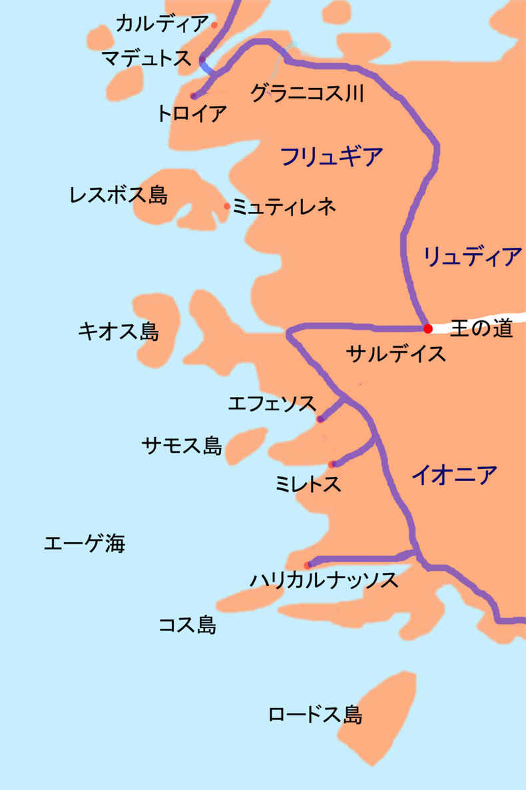

| エウメネス２ ― グラニコス川の戦い ― | |
| 田中 久三 | |
| Fuchishoshudo (2016) | |
| Tags: | gecko |
エウメネス２ ― グラニコス川の戦い ―
田中久三
目次
私は師に命じられて、アテナイの外港ピレウスから出帆した。東へ、エーゲ海をよこぎって、こんもりと緑の木立が生い茂るレスボス島へ。この島に自生しているアンゲロスという草を、葉も茎もまるごと根っこからひっこ抜いて帰らなくてはならない。山奥へ行けばいくほど、たくさん良い草が取れるという。根からとれる精油がとりわけ貴重だが、花も葉も全部ハーブとして食べられる。ところがいくら探してもアンゲロスはみつからない。
山道をたどる途中、藪の中から、木の陰から、一人また一人、精霊が現れ、道連れとなる。
私の右の手を取っているのは、バルシネに良く似ている。
私の左の手を取っているのは、アルトニスではなかろうか。
そんなはずはない。彼女らが、こんな薄衣の、あられもないかっこうをしているはずがない。そうだこれは夢に違いない。夢なら夢で、遠慮無く楽しめば良いのだ。
泉のほとりをすぎ、野イチゴの茂みを抜けて、ニュンフェたちは私にアンゲロスのありかを教えようとしているように思われる。しかし、彼女らはただ漫然と、私と戯れているようにも思えるし、もしかすると私は、彼女らに手を引かれ、導かれて、どこか異世界へ続く谷間へ迷いこんでしまい、もう現世には戻れなくなるのではないか、そんな気がしてきた。
いっそそうなってしまえば良い。アテナイに戻れなくてもかまうものか。ニュンフェたちの笑い声を聞きながら、そんな気もしてきた。
ところが鈴の音のような彼女たちの声に、ぽろり、ぽろり、と悲しげに不協和音を奏でる音色が混じり始めた。ニュンフェらを押し分け、竪琴をつま弾きながら、一人の女神が進み出て、私の鼻をつまんだ。
「エウメネス。」
そう私の名を呼ぶ声は、私の女教師にそっくりだ。
私は目を開いた。茜色に輝く雲を浮かべた青暗い空を背景に音楽教師のキルケーが目の前にいる。夢に出てきたとおりのひっつめ髪だ。
キルケーのそばにアルトニスが、ご自慢の長い髪を垂らして、前屈みにのぞきこんでる。いつものお気に入りの、亜麻布の衣を着てる。あのニュンフェは確かにこの娘だったろうか。彼女の顔を眺めるのが気恥ずかしい。目を閉じて彼女らの甘美な姿を反芻しようとしている間に、夢の残像は、はかなく消えていく。
私はまだ寝ぼけていた。体を起こしてここはどこだったかとあたりを見回す。いやに平たく整地された地面を斜陽が暖めている。不意に足下でつむじ風が起こり、人一人いない競技場を横切っていくかとみえて途中で果てた。
そうだ、私はまだ、リュケイオンにいる。
「気持ちよさそうに眠っていたわね。」
「はあ。」
「また授業をさぼった。」
「すいません、キルケー先生。」
「単位が足りないと退学になるわよ、満期退学。」
「あと何回で落とします？」
「あなた、音楽はあと一回も休めないわよ。」
キルケーは帳面を見ながらそう言った。「神に捧げる大事な科目なのよ。」
「私は医者になるのだから、音楽はいらない。医学と薬学と本草学くらいしかいらない。師もそれで良いとおっしゃっている。」
「師？あなたの師はここへ二年前に来たばかりでしょう。ここリュケイオンの規則をご存じでないのよ。アテナイ郊外に設けられた三つの学舎、アカデメイア、キュノサルゲス、リュケイオンのうち、ここ、アポロンの神域に建てられたリュケイオンでは特に神学、また神学に最も関係が深い体育と音楽は必修になっている。」
体育。そう、どういうわけか学生は体育で体も鍛えなくてはならない。私は体育も苦手科目だった。今日も朝、体育の授業でここを走らされた。将来、兵士になりたいわけでもないのに。くたびれたし眠いしで、そのまま土手で寝ていたら、いつの間にか夕暮れになっていた。
西の空へ落ちていく夕日の残照を浴びて聳える、パルテノン神殿のシルエットを見るたび、何か胸が締め付けられるような気分になるのはなぜだろう。緩慢に翳っていく、ギリシャの栄光。アテナイももう、百年前のアテナイではない。
「エウメネス、人の話はまじめに聞きなさい。いい、アポロンは音楽の神でもあるの。竪琴をつま弾き、詩を語り歌を歌う神。アポロンに愛される人しか、ここリュケイオンにいる資格がないのよ。」
アポロンに愛されたい、なんて一度も思ったことがなくて、私はむっとした。
「私は別にリュケイオンの卒業証書がほしいんじゃない。師に医学を学べればそれで良い。学舎もリュケイオンでなくてアカデメイアでもどこでもよいし、師もいつまでリュケイオンにいるかわからない。もし師がほかへ移るなら私も移るし、私がその前にリュケイオンを退学処分になるのであれば、それもやむを得ない。」
「お好きなように。」
キルケーはつむじ風が通った跡をたどって去っていった。
「あんなふうに言わなくたって。先生に口答えしたって何の意味もないのに。」
歩き出した私のあとを、アルトニスがついてくる。彼女にまで小言を言われたくない。
「あなた師のところへいくの？」
そう、私は昨日からランプの灯りの下、夜通し論文を書いていた。やっと夜明け前に書き終えたのだった。半年ばかりかけて採集したある植物の形質分析、そして種の同定。私はもうずっとその研究にかかりっきりになっていた。
「きっと新種に違いないんだ、アルトニス。新種なら見つけた人が勝手に名前を付けて良い。自分の名を付けても良いんだ。「ΑΓΓΕΛΟΣΕΥΜΕΝΟΥ、」とか。
でも場合によったら、君の名前をつけてやっても良いよ。そうしたら「ΑΓΓΕΛΟΣΑΡΤΩΝΟΥ、」とか。そんなふうな名前になる。
「あら、光栄ね。私の名前の大根ね。」
「アンゲロスは大根じゃないよ。ニンジンとかパセリとか、セリの一種さ。」
「ふうん。」
きっとアルトニスは、ニンジンはオレンジ色のダイコンだと思っているのさ。
「ところで、師はいずこにおられるのか。」
「知らない。」
「じゃあいっしょにいくか？」
師に私の書いたものを読んでいただかねばならぬ。庭園から図書館へ。本棚の間をくまなく探したあと、大理石の列柱が並んだ回廊を過ぎ、畜舎を経て植物園へ向かう。やはりひと気が無い。どうしたことか。午前中の体育の授業にはみんないたのに。
「さっき、レスボス島の夢を見ていたんだ。」
「どんな？」
「おおぜいのニュンフェに山の奥へ連れて行かれるんだ。山奥は険しい深い森になっていて。」
「険しい山？深い森？ニュンフェ？レスボスに？」
「実は一度もレスボス島なんて行ったことないんだ、師にはときどき話を聞くんだけど。まだ誰も調査してない深い森があるって。それで夢に見ただけ。どんな島なんだい？君の出身地だろう、アルトニス。」
「どんなって。大きな湾が二つあるわ。湖のように静かな内海。大きな山も二つある。」
「アルトニス、君が生まれ育ったのは？」
「レスボス島の東海岸にミュティレネという港町があって母はそこの宿屋の女将。父は対岸フリュギアの提督で、顔も見たことない。名前も忘れた。」
「つまり、アナトリアから船乗りの男がレスボス島の港町ミュティレネにやってきて、君のお母さんと知り合って、そこで君を産んだってことか。」
「そう。で、父は交易だか遠征だかなんだか知らないけどちっとも家に居着かずにそのうちどこか島の外の女とくっついたんでしょう。私の知ったこっちゃないわ。
それで、私は母と女二人だけで育ち、ミュティレネには、プラトンが「十番目のムーサ」と呼んだ、プサッフォーが建てた伝統ある学校があって、私はそこに入学した。師もプサッフォーの学校に入ろうとしたけど、断られたのよ。」
「なぜ。」
「だって、プサッフォーの学校は男子禁制の、女学校だから。」
「へえ。」
「あなた知ってる、プサッフォーっていう詩人を。」
「知らない。」
「ギリシャで一番有名な女詩人よ。
もしも娘が逃げるなら、あなたは追いたくなるでしょう
物をあげても拒まれて、なおさらあげたくなるでしょう
今は恋していなくとも、恋するようになるでしょう
たとえ望んでいなくとも」
「それがプサッフォーの詩かい？へんてこな詩だね。」
「そうかしら。」
アルトニスは思わせぶりにほほえんだ。彼女はもしかして私に何か贈り物をしたり、追いかけてほしいのだろうか。
師は植物園におられた。
師は片手にクワをもち、もう片方の手の指先で葉や花に触れながら畝の間を歩いている。
「師よ、こんなところにお一人で？」
「夕餉の野菜を取っておる。」
「そんなことはアルトニスに申しつければよろしいのに。」
「この菜園は、その辺の畑のようにぞんざいに扱われちゃ困る。」
アルトニスはちょっとむくれたようだ。ほっぺたをふくらましている。
「ともかくもう、日が暮れてしまいます。そろそろ冬支度の季節だというのに、風邪を引かれては大変です。」
「何をしにきた？」
「書いたものを読んでいただこうと思いまして。」
師は無言だった。私はつい言い訳をしないわけにはいかなかった。
「数ヶ月ものあいだ、何度も推敲して、もうこれ以上大幅に書き直すところはないはずです。」
「そうか。ひまなとき読もう。」
「ではあとでお部屋までお持ちします。いま、ざっと概要を申し上げたほうがよろしいですか。」
「いや。読めばわかる。」
師は根菜を一つクワで掘り返し、無言でそれを私に手渡した。そして無造作にレンズ豆をむしり取り、それをアルトニスに手渡した。私はかごをとりに物置に行き、師はさらにいくつかの野菜、カブやキャベツ、タマネギなど、そしてハーブもまたいくらか採取した。師はハーブだけを自ら取り、私は残りをみなかごに入れた。アルトニスは厨房に野菜かごをもっていった。彼女はこれから今晩の料理を作るのだ。師はまだハーブを手にして、時折その匂いを嗅ぎながら、回廊をゆっくりと歩いていた。
「どうだ、良い香りだろう。食べてみよ。」
私は眉をひそめた。師はまたしても、私に苦い草を食べさせようというのだ。
「これは？」
一見、ロスマリネに似る。細かく切れ込みが入った葉にうぶ毛が生えて、灰色に見える。香りが高いということは、シソかヨモギあたりか。
「レスボス島にいた頃、島民はこの草をオリーブ油で煎じて香油を作っておった。」
「はあ。で、なんという名の草です。」
「レスボスでは特に定まった名がない雑草だ。しかしエウフラテス辺りでは平原を海のように覆っている草で、アプシントスという。レスボス人はこの香油を酒の薬味にする。レスボスの酒だ。飲んだことがあるか。」
「いいえ。何に効きますか。」
「胃をすこやかにする。」
しかたなく一枚の葉を受け取り、口に入れると、独特の香りがして、噛んでみるとやはり苦い。
「やや毒性がある。島民も子供や家畜には食べさせない。しかしよほど多量に食べなければ死ぬことはない。」
私は師に多くの薬草を教わった。それらはどれも苦かった。煎じても、あく抜きをしても、えぐみが残っていて口から喉までひりひりした。私は水でうがいして、唾を吐いた。師はそんな私を見て「薬が苦いのは当たり前だ、」と言うのだ。
師は動植物を採集し分類することの方が面白いらしい。そんな浮き世離れした学者になれれば私も気が楽だろうに、と思う。実を言えば私はもう、昔ほどに、医者になろうという気持ちも薄れてきた。医者に、人や動物や植物についての知識に、そしてこんな薬に、何ほどのことができようか。
「おまえ、この草は知っているか。」
師は私に別の草を差し出した。花は咲いていないが、葉がアンゲロスに良く似ている。おそらくセリ科だろう。
「知らぬか。これが毒人参だ。」
その名は聞いたことがある。ソクラテスが死刑を宣告されたときに飲んだ毒草だ。
「おまえにもやろう。食べてみよ。」
「いやですよ。まだ死にたくはありません。」
「ほんの少量ならばなんということもない。おまえもアテナイにいればいずれこれを飲まねばならぬ時がくるかもしれぬ。だから今のうちにこれが自分の体にどのような作用を及ぼすのか、試しておいたほうが良くはないか。」
「いやですよ。もし誰かに訴えられたら、裁判に出る前に私ならばアテナイから逃げ出します。あなただってそうでしょう？」
師は笑っている。
「アテナイは楽しく、刺激に満ちたところですが、長居するところではありません。師もそうお考えに違いない。あなたはプラトンやソクラテスのように、このアテナイに生まれ育った生粋の市民ではありませんし、それに、」
「なんだ？」
「今のアテナイにそれほどまでして忠義を尽くす価値などありません。」
「そうだな。おまえの言う通りだ。それでどこへ逃げる？」
「そうですね、母の縁故を頼ってフリュギアか、それともミエザの頃の知り合いのつてでマケドニアへ。」
「テーバイやスパルタではなく？」
「ええ、いやですね。アテナイと同じくらい。たぶん私はギリシャ人が嫌いです。」
師は私に一茎の毒人参を手渡し、私はそれをまたしても仕方なしに受け取った。とりあえず自室に持ち返り、花瓶に生けて観察したあとで捨ててしまおう。そんなことを考えながらそのコーネイオンを見つめていると、師はふと思いついたように話題を切り返してきた。
「しかしマケドニア王はもうイリュリアで死んだそうじゃないか。」
イリュリアというのはマケドニアの北西、アドリア海沿岸の、トラキア人が住む地方の一つ。もう一年近く、王は遠征に出かけたきりで、しかも音信不通だった。
「王が？」
「アテナイ人の間でもっぱらの噂だ。」
アテナイ人の噂などあてにならない。
「そんな、王がそんなに簡単に死ぬでしょうか。」
「少なくとも私のところには何の音沙汰もない。」
師は元来政治の話題がお好きではない。
「なぜ王のことを気になさいますか。」
「彼は私に生涯、研究と教育のための年金を約束した。ところが二年目になってまだ金が送られてこない。金が無くては私は困る。」
マケドニア王は師の望みに応じてさまざまな援助をしてくださった。師の故郷スタゲイラを復興し、アカデメイア、さらにここリュケイオンなどのギリシャ人の学舎にも多大の寄付をしてくださった。アテナイ人たちはともかく、私たちアテナイに寄宿する学徒らはみな王に少なからぬ恩恵を受けている。
今やアクロポリスに日はすっかり落ちて、空は茜色から深い群青色に変わりつつある。丘の上に建つパルテノン神殿は、その姿を闇に溶け込ませつつあった。
「師は王にお礼をなされましたか。」
「礼とは？」
「たとえば礼状をお書きになるとか、使者をお遣わしになるとか。」
「そんなことはしない。」
「そのくらいしましょうよ。」
「知ったことか。礼をせねばもらえぬ金ならばもらわぬほうがましだ。」
私はそんな、犬儒派の哲学者あたりが言いそうなことを師が言ったのでおかしくなった。
師は自分の書斎へ向かった。師と別れたあと、アルトニスは唐突に私に語りかけた。
「エウメネス、師も、私の父と同じように、ミュティレネの対岸、フリュギアのアタルネウスという町から、海峡を渡ってきたのよ。」
「どうして？」
「ややこしい話なんだけど聞く？」
「ああ。」
私は、アルトニスが厨房で支度する間、彼女の話相手になることにした。
「師はトラキアのスタゲイラに生まれて、そこで子供の頃、父のニコマコスを亡くして、アテナイに上京するまで、母とともにアタルネウスで姉アリムネステの旦那さん、プロクセノスのうちで養われたそうよ。」
「へえ。師は、姉の嫁ぎ先で成人したあと、独立して、ギリシャ本土アテナイで生計を立てようとしたのだろうね。」
「ううん。ちょっと違うわね。アタルネウスの領主ヘルミアスは、お金持ちでものすごく羽振りの良い人だった。彼はたちまち、秀才だった若い頃の師を見出した。師の将来を嘱望して、師をアテナイのアカデメイアに遊学させたのよ。学問の都アテナイで、哲学だけでなく、商売の仕方も学ばせるためにね。それからヘルミアスは師をアタルネウスに呼び戻して、師を自分の娘ピュティアスと結婚させた。師はヘルミアスの婿養子になった。師はヘルミアスの跡継ぎになるはずだった。師と奥様との間に授かった娘さんは、師の姉アリムネステの息子のお嫁さんになったそうよ。」
「ふうん。幸せで裕福な家族に恵まれたんだな。そのままアタルネウスに居着けばよかったのにね。」
「まあ、そうも行かなかったのよ。」アルトニスは師や学生らのまかないの下ごしらえをしながら、なにやら楽しそうに話し続ける。「その、アタルネウスの領主ヘルミアスって人は、代々の領主の家柄ではなくてね。昔エウブロスという、黒海からヘレスポントス、ミュティレネ海峡辺りまでを縄張りとする、有力な海運業主がいた。ヘルミアスはそのエウブロスさんの奴隷だったの。エウブロスはデロス同盟とペロポンネソス同盟の戦争の頃にペルシャ軍にお金を貸したり船を貸したり、ビュザンティオンを攻めたマケドニアを助けたりして、すごく裕福になった。ヘルミアスはそのとっても有能な番頭さんだった。エウブロスには身寄りがなかったのでヘルミアスがエウブロスの跡取りになったのよ。それでヘルミアスはアタルネウスの事実上の王様になったというわけ。」
「いわゆる僭主、だね。」
「ああ、そうとも言うわね、ギリシャでは。」
「奴隷でも僭主になれるんだな。」
「ペルシャじゃ良くあることよ。奴隷、宦官、傭兵。商人。学者。職種や出自を問わず、身分は賤しくとも、世の中の情勢に敏くて、金儲けがうまい人は一代で王侯貴族のような身分に出世する。」
「師はじゃあ、うまくいけば、アジアとヨーロッパにまたがる僭主になれたはずだったんだ。」
「うふふ。そうかもね。ところがそのヘルミアスに嫉妬したのが、同じエウブロスの部下だった、ギリシャ人傭兵のメントルという男。我こそはエウブロスの跡継ぎだと気負っていたメントルは、政敵ヘルミアスの足を引っ張るために、ペルシャの力を借りようとした。」
メントルという名には聞き覚えがあった。有名なギリシャ人の傭兵だ。確か、マケドニアのミエザにいたころに聞いた気がする。しかし、よく思い出せない。
「実際、ミュティレネとアタルネウスに挟まれるミュティレネ海峡は、ペルシャとマケドニアがせめぎ合いぶつかりあう最前線なわけ。ギリシャは元来海洋国家。ペルシャは大陸国家。海洋と大陸が接する、まさにこのアナトリア西岸地域がすべての紛争の火種になるのよ。」
「トロイア戦争もここで起きたしな。」
そして私の生まれ故郷のカルディアだって同じことだ。カルディアはヨーロッパとアジアを隔てるヘレスポントス海峡の要衝だ。
それにしても、アルトニスのタマネギのむき方はすごく雑だ。決して器用な子ではない。
タマネギのせいでぽろぽろと涙を流しながら、彼女の冗舌は止まらない。
「エウブロスもヘルミアスもメントルも、元はと言えばみんなギリシャ人。どちらかと言えばペルシャよりはマケドニアに味方すると思うじゃない？でもギリシャ人の心理ってのは複雑怪奇なのよね。特に新興勢力のマケドニアが絡んでくると。アテナイもスパルタも、マケドニアを陥れるために仇敵ペルシャと結ぶことがあるのよ。
そして親マケドニア、親ミュティレネのヘルミアスは捕まって、ペルシャの王都スーサに連れて行かれて、そこで拷問されて死んだ。師もマケドニアのスパイじゃないかって疑われて、政争に巻き込まれちゃかなわないんで、やむなく奥様とお別れになって、レスボス島に移ってきたって、母が言ってた。」
師は僭主には同情的で、アテナイの民主政には批判的だった。ペイシストラトスという僭主がアテナイを支配していた時代が、アテナイの絶頂期だといつも言っていた。それは師がヘルミアスの庇護の下にいて、良くしてもらったからかもしれない。
僭主はペイシストラトスみたいに貴族のボスであったり、ヘルミアスのように奴隷だったり宦官だったりもする。血筋や、国の役職などに関係なく、一代で成り上がって事実上の独裁者となった者を僭主と言うのだ。アテナイ人は王政や貴族政も嫌いだが、この僭主ってやつを一番いやがる。手腕があり、人間的な魅力があるから僭主にもなれるのだ。しかし多くのアテナイ人にとって民主政は唯一正しい、絶対的な政治形態であり、僭主はその真逆だというわけなのだ。
「師はミュティレネで生きていくための蓄えや仕事を持っていたのかな。」
「さあねえ。ヘルミアスさんから多少はお小遣いをもらってたに違いないけど。」
「君のお母さんと師は親しかったのかな。」
「たぶん。」
妻と別れた男と、夫と別れた女か。まあありがちな関係だったのかもしれないなあ。
「師はマケドニアに呼ばれなければずっとミュティレネにいただろうかね？」
「そんなこと私にはわかんない。」
「君も時には故郷が恋しくなる？ミュティレネに帰りたい？」
「帰りたいけど、でも、レスボスは、そんなにずっといたいと思うほど良いところじゃないし、いたくてもずっといられるところでもない。あなたが夢見たような、地上の楽園でもない。いつでも島から逃げ出せるように、アテナイの学校くらい出ておけ、母にそう言われて。」
「どうして。」
「みんなぎすぎすしてる。言葉に出すと喧嘩になるから、みんな言いたいことは腹にしまって、黙ってる。嫌なことがあると、というより嫌なことが起こる前に、舟に乗ってすぐにどこかへ行ってしまう。アテナイやフリュギアにいられない人がレスボスに来て、入れ替わりに、レスボスにいられなくなった人が、島を離れる。今はレスボス島はどちらかと言えば、ギリシャが好きなギリシャ人のほうが多いけど、南のロードス島は、ギリシャが嫌いなギリシャ人のほうが多くて、レスボスとロードスは、いつも戦争して、いつも軍船を送りあって、いつも海上封鎖しあって、ロードス島からレスボスへ、レスボスからロードスへ、頻繁に人が入れ替り、形勢が逆転する。」
「なぜギリシャが嫌いなギリシャ人がそんなに増えるのかね？」
「さあ、アテナイのせいじゃない？」
「どうしてそう思う？」
「私がアテナイに呼ばれるころに、お母さんは言った、ミュティレネは昔アテナイに滅ぼされるところだったって。男はみな死刑。女子供はみんな奴隷にされそうになった。」
「なぜまた？」
「ミュティレネが、デロス同盟から脱退しようとしたから。」
「たったそれだけのことで？」
「ええ。
レスボスはもともと自主独立のギリシャ人の島。
でもペルシャが攻めてきて、ギリシャ人どうし同盟を組もうというので、デロス同盟ができた。レスボスは軍船を拠出する役目を負わされた。レスボスは貧乏だけど、山には豊かな原生林があるから、戦費ではなくて、船を作って差し出せってわけ。
ペルシャを追っ払って戦争が終わったあとも、アテナイが威張り散らして、ミュティレネの船主たちはみないやがって、やっとアテナイの将軍ペリクレスも病気で死んで、デロス同盟も命運尽きたから、スパルタや、ペルシャ支配下のフリュギアを頼った。師の故郷のスタゲイラはそのときマケドニアを頼ったのよ。
そして怒ったアテナイ人がレスボスに艦隊を派遣して、ミュティレネを海上封鎖した。艦隊の引き渡しを拒否したミュティレネをアテナイは攻撃した。城壁は破壊され、人々はみなミュティレネの港に集められた。」
「それでどうなったの？」
「ところがアテナイの民会であまりに過酷な処置を批判する動議が僅差で通って、先の決議が覆されて、首謀者だけを処罰することになった。その知らせの使者が乗った船が、死刑執行寸前にミュティレネに届いたのよ。」
結局、アテナイのデロス同盟は、スパルタを盟主とするペロポンネソス同盟との戦争に敗れて、デロス同盟は解散したのだった。
「この世にはもう、プサッフォーの時代みたいに、森の中でのんびりニュンフェと戯れていられるようなところはどこにもないのよ。どの島にいこうと、どの山に隠れようと、災厄が追いかけてくる。」
「君はアテナイが嫌いなのか？」
「嫌いというより、怖いわ。政治家も市民も民会もきまぐれ。どっちに走り出すかわからない狂人のよう。」
「エウメネス、アルトニス。こんなところにいたのか。大変なことになった。みんな講堂に集まっている。君たちも来てくれ。」
慌てたようすで厨房の戸を開けて、学友の一人が私たちにそう告げた。
私たちが講堂に入ると、大勢の学生たちが集まってきていた。こんなところにみんな集まっていたとは。
師はいつものように講堂の中央に据えられている長椅子に腰を下ろしている。師も今来たばかりのようだ。
「どうした、そうぞうしい。」
「テーバイがやられました。」
「誰に？スパルタか。」
「いいえ。」
「ではペルシャか。」
「いいえ。マケドニアに。」
「アンティパトロスだな。マケドニアのアンティパトロスがそんなことをしでかしたのか？」
「いえいえ。マケドニア王がイリュリアから帰ってきたのです。」
マケドニア王はやはり生きていたのだ。
「それで？」
「三日前、テーバイの国境に姿を見せ、町を囲み、たった一夜でテーバイを陥落させたそうです。それが昨日のことであったと。」
「誰からそんなことを聞いた？」
「アテナイ中がその噂で持ちきりです。マケドニア王がテーバイを滅ぼしたと。」
「アテナイ人の噂などあてになるか！」
「いえ、確かです。私は逃れてきたテーバイの武将らに直接聞きました。」
「アレクサンドロスがか。あいつが、そんな恩師のつら汚しのような真似を。」
マケドニア王は王太子時代に師の教え子だったのだ。
アルトニスが師や学生らの夕食を講堂のテーブルに運んできた。いつものサラダ。ライ麦パン。レンズ豆とタマネギのスープ。そして葡萄酒。食事をしている間も、皆は夢中で議論していた。情報も少しずつ集まりつつあった。
テーバイ人も、マケドニア王はすでに死んだと思っていた。アテナイの民会にも少なからぬ反マケドニア派がいた。テーバイに応じて、アテナイも、スパルタも、マケドニアに叛旗を翻そうとしていた矢先であった。
「テーバイの敗将らとともに、我がアテナイの首謀者もすでにペルシャに亡命した。そして彼らを追ってもうじきマケドニア兵もアテナイに到着するだろう。」
「アテナイもマケドニア軍に囲まれるかもしれぬ。」
アテナイはテーバイの南隣のポリスだ。騎兵ならば二、三時間で到達しよう。
「今の我らに戦は無理だ、開城せねばなるまい。」
「反マケドニアの民会議員はすでにスパルタに亡命したそうだ。」
王が外征で留守にしている間に、マケドニアによって追放されていた反マケドニア勢力が政局を転覆させようとしてテーバイに戻り、市民たちを煽った。市民たちは扇動家の言葉を自分の都合の良いように信じた。ところがマケドニア王は戻ってきた。粛清を恐れた反マケドニア派らは妥協を拒んだ。そのためにマケドニア軍が城壁を突破し、広場になだれ込み、市民を虐殺したのだという。
夜が更けても、学生たちの多くは講堂を離れなかった。アテナイがテーバイのとばっちりを受け、市内で戦闘が始まることは十分にあり得ることだ。家に戻るよりは、アテナイ郊外のここリュケイオンにいて、市内から新たな情報がもたらされるのを待つほうが安全だ、と思われたのである。私はもともとリュケイオンに住み込みで学んでいた。ほかへ帰るところとてない。
突如一群の武装した兵士らがリュケイオンに押し入ってきた。いよいよここにも捜索の手が及んだのだ。
アテナイ兵ではない。私には見覚えがあった。とさかのような、ブラシのような派手な羽根飾りをかぶったその軍装はマケドニア兵のものである。
「エウメネスはいるか？カルディアのエウメネス。」
兵士の一人が叫んだ。
皆が私を見た。私は答えた。「ここにいます。」
「王がおまえをお呼びである。ご同行願う。」
皆が哀れみの目で私を見た。王が私を反マケドニア勢力の一味と見なして、連行するのだと、そう思っているのだ。
「私は反マケドニアではない。」
その言葉が口から出かけたが、やめておいた。兵士に言ってもムダだし、私にはやましいところなどない。王だって、私の潔白を信じていることだろう。
「王は私に、どんなご用件であろうか。」
「詳しくは知らぬ。ただお連れしろと。」
「私に王から何か伝言のようなものはなかっただろうか。」
師の質問に兵は短く答えた。「無い、」と。師はなお言葉を続けた。「テーバイはどうなった。」
兵はぎろりと師をにらんだ。
「そなた、それを聞いてどうする。」
「テーバイには、我が友も、マケドニアの友人らも多くいよう。彼らをどうする気か。」
兵士らも、師がどのような人かは承知しているようだ。粛然として告げた。
「友好市民らの無事は王が保証される。」
「それ以外の者は。」
「敵性市民は殺された。生きておれば奴隷に売られよう。テーバイは滅びたのだ。」
彼らは今まさにそれらの市民らを剣で屠って来たのだ。
テーバイが滅んだ。あの伝統あるギリシャのポリスが。
兵は私に目配せした。もう行かねばならぬようだ。
「師よ。忘れるところでした。これを読んでおいていただけますか。」
私は師に、さっきからずっと手にしていた論文を渡して、改めてお辞儀をすると、師は無言でその論文を受け取り、表紙に目を落とした。
「エウメネス。」
「はい。」
「私もかつてマケドニア王に呼ばれた。そして今度はおまえが。」
私は師が何を言おうとしているのかわからず、言葉がでなかった。
「おまえは私の運命をなぞることになるかもしれん。おまえは王者の道を行くだろうか。それとも学究の道にとどまるか。楽しみだな。」
師の瞳が悪戯っ子のように光るのを、私はこのとき初めてみた。
兵士らとともに講堂を出るとアルトニスがいた。
私のような者のために泣いてくれるのか、アルトニス。
すれ違い際、甘い髪の匂いがする。
抱いてやらねばなるまい。
私は何か義務感のようなものにかられて、彼女を抱きしめた。彼女は無抵抗だった。
思ったよりも細い腰だった。小さく柔らかい頬だった。
思えば初めて彼女を抱いたのだった。二人とも無言だった。
兵に催促され、私はリュケイオンを出てアテナイ城市のディオカレス門をくぐった。アテナイは既にマケドニアに城門を開いた後だった。沿道にも城内にも多くのマケドニア兵が詰めている。市民らは不安げに、おのおのの家の中で息を潜めているらしい。
私は市の中心、アゴラへ連れていかれ、ここで私は他の多くのアテナイ人らとともに護送用の馬車に乗せられた。彼らはおそらく政治犯なのだろう。中には手鎖や足枷を付けられた者もいる。反マケドニア派のアテナイ人はすでに逃亡したはずだが、逃げ遅れたのだろうか。あるいは隠れているのを見つけられたのだろうか。それとも身内に裏切られた？ともかくも私はそんな過酷な扱いは受けていない。でも、しっかり監視されていて、この幌馬車から飛び降りて逃げることもできない。
車はアテナイの仰々しい表玄関、二重見附を出て、エレウシス街道を西へ、テーバイへの道をたどるようだ。この車の中で半日ばかりは揺られることになる。じたばたしても仕方ない。私は馬車の上に寝床代わりに渡された板に寝転がり、揺られるままに眠ろうとした。しかしまったく眠れなかった。まぶたの裏にはニュンフェが舞う姿も浮かんではこない。
私は王の好意により学問を続けることを許されたのだ。だから私はアテナイにいた。王は即位と同時に師がアテナイに移ることをお許しになり、私も師に従ってアテナイへきたのである。
私はまだリュケイオンで学ばねばならぬことがある。王ご自身が私にお許しになったアテナイへの遊学はまだ二年しか経っていない。王は私に何か特別な用があって、私と面会して、すぐに私を帰してくれるかもしれない。王が私を必要としているとしても、私が十分に学問を終えてからで間に合うはずではないか。
テーバイの空は今も余燼に燻っている。何か、さまざまなものが焦げる匂いが混じり合い、風に乗って、私たち来訪者を迎える。
王はテーバイ郊外の幕屋におられた。王は天幕の下に設えられた、質素な木製の長椅子に寝転がり、クッションにもたれかかっていた。
「エウメネスよ、王命により、そなたを王軍書記官に任ずる。」
陪臣が羊の革の巻物にしたためられた勅書を読み上げて私に示し、細く巻いて私に手渡した。
「王軍書記官？」
「そうだ。王はこのたびペルシャを討伐する遠征軍を起こされる。その覇業に、おまえも従軍するのだ。」
「いつ？」
「今すぐだ。」
ペルシャ派兵の噂は聞いていた。しかしなんて唐突なのだ。なぜ私が王軍に参加せねばならない。私は思わず王を凝視した。
王は沈黙していた。私の言葉を待っているのだ。
「王よ、なぜそのようにお急ぎなのですか。そしてなぜ私にそのような役目を。」
王は思いを巡らすようだった。言葉を発するのが面倒くさそうに見えた。しゃべり出すと冗舌なお方だが、最初の一言がなかなかでてこない。それは彼のいつもの癖だった。
「私よりも有能な実務家、或いは学者はいくらでもおります。なぜ私なのですか。」
「師はどうしておられるか。お元気か。」
王は私の質問に答えるのが煩わしいようだ。「ええ。」王は直言を好まれる方だ。私は率直に答えることにした。「リュケイオンの二年目の維持費がまだ支払われていないとこぼしておられました。」
王は苦笑いした。
「なんだ。金の催促か。俺は今までずっと忙しかったのだ。トラキアの諸部族を平定するために。師のことまで頭が回らなかった。金ならある。他には？何か言っていたか。」
「いいえ。特には。」
「そうか。なら良い。」
「王はまだ私の質問に答えておられません。なぜ私を書記官にするのです。なぜペルシャ遠征に私を連れて行くのです。私はただの学生に過ぎず、まだ学問を終えておりません。その上私は必ずしも書記官に適任ではないと思います。悪筆で遅筆ですし。これまで人の話を聞いて書き記す仕事をしたことがありません。」
「エウメネス。なるほど、ただの書記ならいくらでもいるだろうよ。簿記ならばシリア人。法律家ならばペルシャ人を雇えばよかろう。学者ならばエジプト人を。しかし彼らはみな外国人だ。マケドニア人ではない。」
「王よ、私はマケドニア人ではありません。カルディア人です。私もマケドニアでは外国人の一人です。」
「カルディア？」
王は眉間にしわをよせた。カルディアはマケドニアの同盟国、というより保護国の一つだ。しかし王がカルディアについて詳しく知らぬのも無理はない。
おおまかに言えば、ギリシャ人の土地の北にはトラキア人が住み、西のヨーロッパ奥地にはケルト人が、そして東のアナトリアにはフリュギア人が住み、その背後からペルシャ人が進出してきている。マケドニア人というのはトラキア人の居住地の中に住むギリシャ語を話す種族であり、その西にいるのがイリュリア人で、彼らはトラキア人の一部族である。
我がカルディアは、本来トラキア人の土地である。子供の頃からトラキアの言葉も話す。だから私をトラキア人と言うこともできる。カルディアは、時にペルシャが取り、あるときはギリシャの植民地となり、またあるときはフリュギア族の夜襲を守り切れずに見捨てられる、またあるときはギリシャが取り返す。それを繰り返している、取るに足らぬ辺境の土地である。
ギリシャのポリスはみな本拠地と植民地を持つ。テーバイ、スパルタ、アテナイ。名のあるいろんなポリスがカルディアへ移り住み定住しようと試みた。
私は一通り王にカルディアの説明をした。アナトリアへ渡るヘレスポントス海峡の手前に、ケルソネソス半島という、海峡に沿って盲腸のように伸びた半島がある。そのケルソネソス半島の付け根、海峡の裏側にメラス湾という狭苦しい入り江がある。その入り江の途中にとげのように生えた岬の陰にある港町、それがカルディアである、と。
デロス同盟がなくなった今も、アテナイはマケドニアと、あのちっぽけなケルソネソス半島の帰属を巡って小競り合いを続けているのだった。私の父はテッサリアからの植民であった。従って私はテッサリア人と言っても良いかもしれない。しかし母はカルディア生まれのフリュギア人だ。
「ああ、そう言えばそうだったな、だが、そんなことはどうでも良い。しょせんマケドニア人も信用はおけぬ。トラキア人やケルト人どもと同じくらいの蛮族だ。」
ギリシャ本土から北に偏りすぎているマケドニアは、これまでギリシャ人から蛮族扱いされてきた。
王の言葉は矛盾している。
「俺はおまえを、ミエザでともに学んだ頃から観察していた。そして、おまえという男がどういう男であるかを知っている。」
いったい私の何を知っているというのか。
「書記官ということは私は王の近くに侍ることになります。」
「そうだ。」
「私は将来、王の寝首をかこうと思うかもしれません。城外の敵には比類無くお強い王も、寝所では非力な私によって命を奪われるかもしれません。」
王を挑発したいのではない。しかし試さねばならない。書記官とは、側近とはそうした仕事であり、ゆえに疑いをかけられ、処罰される者が少なくないのだ。私はそんな命がけの仕事がしたいわけではない。私はどうしても王の本心を聞いておかねばならない。
「馬鹿者。」
王は激昂し、長椅子から立ち上がって、王の前にひざまずいている私のそばまで下りてきた。
王はしかし笑みを浮かべて言う。
「そうだ、俺はおまえの、そういう物の言い方が好きだ。
おまえの言う通り、近習に、寝ている間に短剣で胸を突かれるかもしれん。毒を盛られるかもしれん。逆の言い方をすれば、殺されてもかまわぬというほどに好きな者しかそばには置けぬ。人を信じてやらねば、私も信じてはもらえまい、そうではないか、エウメネス。俺のそばに置くものは、俺が好きか嫌いか。それだけで決めるしかない。」
王は私の瞳をのぞき込んだ。
私は王の視線に耐えきれず、目を伏せた。
後になって知ったことだが、王は私以外にも、同じようなことを家族や側近の者たちにも、あのヘファイスティオンやクレイトスらにまで言っていたのだった。それは私がクレイトスから直接聞いたことだ。必ずしも私が特別扱いされたわけではない。つまり、私は王から、武臣とか秘書というよりも、彼らのような側近、というよりもむしろ友人、として侍るよう期待されているわけだ。
「王よ、私は王に知っておいてもらわないわけにはまいりません。」
「何だ。」
「私の母は、我がカルディアの対岸、ヘレスポントス海峡を挟んだ、ペルシャ王国フリュギア太守アルタバゾスに仕えた地方官の妻です。フリュギア人であり、ペルシャ王の臣下でした。」
アルタバゾスはかつてペルシャ王クシャヤルシャ（アルタクセルクセス一世）のギリシャ親征に従軍した、ペルシャ王族の裔である。王はこれからペルシャ討伐に出かけるのだ。その敵と因縁のある自分。王のつり上がった片方の眉に、私は王の動揺と疑惑を見たような気がした。
カルディアは多民族の町だ。そうした町では往々にして、民族間の争いを避けるために、異邦人どうし婚姻する。私の父母もそうであった。王はなおも私の言葉を待っているようなので、私は続けた。私はしばらく父と母のなれそめを語ったが、王はさほど興味はなさそうに聞いていた。
「俺にもペルシャ人やフリュギア人の友人はいくらでもいる。彼らに頼られることもあるし、時には俺が彼らに頼ることもある。おまえに説教されずとも、ギリシャとペルシャのややこしい関係くらい俺は熟知している。
アルタバゾスのことも、おまえに説明されずとも良く知っている。我が父のもとに亡命してきて、今は俺の客人だ。アルタバゾスにはいろんなことを教わった。フリュギアのことも。ペルシャのことも。そしてフリュギアを彼に返してやるためにも、フリュギアを討たねばならぬ。
俺はギリシャとペルシャが一つになれば良いと思っている。おまえのような人間が、これからもっと増えると良い。」
王が何を言いたいのかわかりかねていると、王は話題をやや切り替えた。
「おまえはペルシャ語を話せるか。」
「いいえ。フリュギア語かトラキア語ならば多少は。」
「しょうがない。他を当たるか。これから必要になる。ペルシャ語は勉強しておけ。」
ヘレスポントス海峡あたりには、ペルシャ語のできるギリシャ人、フリュギア人ならば、自分の他にもいくらでもいるのだった。
「リュケイオンでは何を学んでいた。」
「はい。主に医学と算術、そして幾何学を。」
ペルシャの医学はギリシャよりもはるかに進んでいる。私は幼いころペルシャ人の医師に命を救ってもらい、父も望んでいたので、医者となることを志したのだ。算術と幾何学は私の得意科目で、師に習うというのではなく、独学で身に付けた。
「ならばおまえに私の主治医もやってもらおうではないか。」
「いえ、それは困ります。私はまだほんの少しだけ、医術をかじって、薬を少し配合できるようになったばかりです。なにとぞご容赦を。どなたか他の方にお命じください。」
私は王の気性を良く知っている。常に危険を冒しそれを愉しむ子供であった。王はきっと戦場でも先頭に立って戦うだろう。そしてしばしば傷を負い、或いは死ぬかも知れぬ。その王の主治医とでもなれば、どんな責任を負わされるかもしれない。
「ならば医者は信用のおけるエジプト人を雇おうかな。」
もしかして、王は私が何の役に立つかわからずに、私を呼んだのだろうか？通訳にも、医者にも適さぬ私を。
怪訝な顔をしている私を前に、王は人払いをした。私だけが王の幕屋に残された。
「椅子にかけたまえ、エウメネス君。」
王は私に席を勧めた。私は変に遠慮せず、王の指図どおりに彼の真正面に椅子を据えて腰掛けた。
「軍議というものは、少人数で密かにおこなうものだ。俺と、おまえと、あとはプトレマイオスを呼ぶ。この三人ですべてを決定する。その後、将軍らに諮問し、全軍に下知するのだ。」
それがほんとうの私の仕事なのか？軍議？
王はプトレマイオスを信頼しておられる。それはそうだ。彼は王の兄のような人だ。マケドニアの貴族で、王の近衛隊長。貴族らしいおっとりとした人で、ミエザでプトレマイオスは主席の学生だった。一方私は末席に連なったにすぎない。
「なぜ私なのですか。」
私はまた同じ文句を繰り返していた。
「ふむ。ミエザでカイロネイアの戦いの講義があっただろう。」
カイロネイアの戦いとは、王の父フィリッポス二世の代に、マケドニアがアテナイ・テーバイ連合軍を破り、ギリシャにおけるマケドニアの覇権が確立した戦いだ。
「俺はまだ十八で、事実上の初陣であった。
俺はこの戦いに参加するまでは、何者でもなかった。気がついたらマケドニア王家に生まれ、王太子となって、突然戦いの中に投げ込まれた。
俺は死にものぐるいで戦い、気付いたらマケドニアが勝利していた。俺はこの戦いで、自分の中で何かが目覚めた気がした。心の目が開いた気がした。戦に勝つには何が必要かということを直感した気がした。そしてなぜ私がこの世に生まれてきたか啓示を受けた気もした。しかしそれをうまく言葉で説明できずにいた。父にも、同僚にも。臣下にも。
おまえがそれをミエザでうまく解き明かしてみせた、理路整然と。
父は我が軍の右翼にいた。俺とパルメニオンは左翼にいた。後に判明したところによれば、相対する敵は我らの右手、つまり敵の左翼にはアテナイがおり、左手つまり右翼にはテーバイがいた。つまり、アテナイには父が、テーバイには俺が対峙していた。
初戦、父がアテナイの軍に仕掛けた。ところが父はそれから「わざと」後退した。アテナイ軍は父に何か事故があったと思い追撃してきた。そのため右手のアテナイが左手のテーバイよりも突出して、敵の中央は、アテナイの同盟軍と、テーバイの同盟軍の混成部隊であったが、そこが手薄になった。
俺にはその敵の弱点がありありと見えた。天から神の手が伸びてその箇所を指し示したようにも思えた。鳩の群れが飛来してその上を旋回しているようにも見えた。なんと言い表して良いかわからぬが、ともかくも俺はそこへ吸い込まれていった。
俺がその間隙に飛び込んでいくと、パルメニオンらが慌てて俺の後を追って、アテナイとテーバイの軍を分断したのだ。
最初布陣したとき、俺の正面にはテーバイの神聖隊がいた。」
デロス同盟に取って代わった、かのスパルタを盟主とするペロポンネソス同盟をレウクトラの戦いで破ったテーバイの神聖隊。テーバイの名将エパメイノンダスが組織し、ギリシア最強と謳われたあの百五十組三百人の、ヘラクレス信仰の同性愛者からなる精鋭歩兵部隊だ。
「今から思えば、俺がもたもたしている間に神聖隊が俺を正面から衝き、さらにアテナイとテーバイが挟撃してきたとしたら、俺は死ぬか捕虜になっていただろう。もし俺が咄嗟にあの間隙に飛び込んでいかなければ。
好機ではあったが同時に危機でもあった。もともとアテナイとテーバイは犬猿の仲であるから、俺があのように割り込んでいっても連携ができようはずもない。アテナイとの連絡が途絶えたテーバイは狼狽してなすすべがなかった。そこで俺とプトレマイオスは右手から友軍のテッサリア騎兵を率い、また左手からは老将パルメニオンがテーバイ神聖隊を囲んで殲滅した。神聖隊は三百人中二百五十人以上が戦死したのだ。
それを見て浮き足だったアテナイを父が押し返して討ち破った。」
「王よ、あなたはその作戦をお父上と取り決めておられたのではなかったのですか。」
「いや。父は何も言わなかった。
パルメニオンは俺に聞いた。なぜあのときあそこへ突入したのですか、と。俺にはうまく答えられなかった。
父はわざと俺をギリシャ最強の神聖隊の前面に配備した。そして俺を残して父は手勢を引いた。父は俺を見殺しにするつもりではなかったか、俺はあそこで戦死する予定だったのではないか。初陣の俺を。そうとしか考えられぬ状況だった。俺がマケドニア王を継ぐことを快く思っておらぬ者に父が抱き込まれたのではないかと。
しかし父はおそらく、我らがアテナイ・テーバイ連合軍に敗れることはまずあるまいと高をくくっていたのだろう。何しろ我らは、マケドニアの北、イストロス（ドナウ）川の流域、トラキアの広大な原野で蛮族らと日々交戦していたのだから。狭苦しいアッティカで小競り合いばかりしている連中が俺たちにかなうはずがない。
とすると父は、初陣の俺がどのくらい将軍としての軍才を持っているか、しばらく自分は手出しをせずに見定めようとしたのではなかったか。将来の王となる俺のために、敢えて俺を試したのだ。そしてパルメニオンは俺のお目付役だったはずだ。」
私は次第にミエザで受けた講義と、そのときに私が述べた意見を思い出してきた。
ギリシャ世界の中原に割拠するアテナイ、テーバイ、スパルタの三国は互いに争って疲弊した。その局外にあって、マケドニアは後背のトラキアに徐々に勢力を拡大し、またトラキアの侵略から救うことによって隣国テッサリアやエピロスを味方に付けた。アレクサンドロスの父フィリッポスは幼い頃にテーバイで人質になり、神聖隊員とも交わり、ギリシャの進んだ文化や戦術を学んだ。またフリュギアからの亡命者を受け入れて彼らからも学んだ。マケドニアはテッサリア地方の小ポリス群に盟主と仰がれるようになった。ギリシャでもアテナイ、テーバイ、スパルタ以外の小さなポリスはみな、大きな三ポリスのどれかの傘下となり、マケドニアは直接アテナイ、テーバイと境界を接することになった。このときになって初めてアテナイとテーバイは連合してマケドニアに当たってきたのである。
アテナイは海軍の国であって、陸戦には不慣れである。フィリッポスはおそらくそれを見抜いていた。アテナイを翻弄しようとして、まず自分から仕掛けて、それから引いてみせた。アテナイはわけもわからずフィリッポスを追った。そして王子アレクサンドロスの前面に敵の亀裂を作った。アレクサンドロスとパルメニオンは敵の最右翼にいたテーバイの神聖隊を孤立させ包囲し、一方で疲れをみせ始めたアテナイ軍を、フィリッポスは押し返してやすやすと壊滅した。
この戦法を考えた先代の王フィリッポスは恐ろしいお方だ。おそらく彼は間諜から敵の構成と布陣を知り、そのような奇策を思い付いたのだ。
ミエザの講義では、私は種々の状況証拠を総合してみて、王が後退した理由はわからぬが、そのことが結果的にテーバイとアテナイを分断することになり、王太子に敵中突破の機会を与え、マケドニアを勝利に導いたようだ、とお答えした。しかし今改めて、これはフィリッポスによって、巧妙に仕組まれた戦術だったのだろうと思えるのだ。
「敵の中央を分断すること。敵の意表を衝き、判断を誤らせること。敵を攪乱して好機を作る、或いは、危機を好機に転じるということ。そのためには迅速かつ正確に、つまり機動的に、隊形を変化させなくてはならない。
陸戦中陣形は常に変動する。両軍とも、最初の陣形を整えることはできるが、それから後の陣形は誰にも予測できない。その崩れゆく陣形を新たな陣形に作り直し活かす。そして敵陣の一番手薄な箇所に攻撃を集中する。
それさえできればあの大国ペルシャにさえ勝てる。すでにテーバイとアテナイには勝った。そのことに気付いた。おまえが俺の天命に気付かせてくれた。俺とは別の視点からな。」
「天命？」
「俺はな、人よりも頭の回転が倍くらい速いんじゃないか、そう感じていた。そして戦場に立つと、俺はさらに人より十倍も百倍も頭の巡りが速くなる。カイロネイアの時がまさにそうだった。すると味方の兵も敵の兵もまるで止まったように見えるのだ。そして神の声としか言いようのない声が、俺に教えてくれる。神の視点としか言いようのない視点が俺に見せる。あれを見よ。今敵陣のあの弱点を衝けばおまえは勝てると。理由？根拠？そんなものはない。有りようがない。では錯覚？否。
俺は地上にいながらにして、空から鳥が眺めているように、敵の動きが俯瞰できるのだ。ありとあらゆる、とてつもなく研ぎ澄まされた皮膚感覚や嗅覚や聴覚が覚醒し、埃の匂いや空気の湿り気、風に吹かれる木の葉のざわめきさえもが、俺に教えてくれる。ソクラテスならばそれを神霊と呼ぶだろう。思えばダイモニアとの対話は、俺には子供の頃からごく当たり前のことだったが、実は俺にしかできないってことに気付いた。父にも、他の王族にも、どうやらそんな能力は無いらしい。
つまり俺は、まったくの偶然で王族としてこの世に生まれてきた。しかも同時に人にない能力を持っている。この二つの僥倖が重なるというのは、まさに天が命じたとしか言いようがない。もし俺が王族でなく、トラキアの羊飼いにでも生まれていれば、この特殊な能力も活かせず、のたれ死ぬことになったはずだ。」
「おそらくその通りなのでしょう。しかしそれは王が持って生まれた天賦の才能、そして先代の王から学んだ戦術であり、私とは何の関係もありません。私は王族でもありませんし、軍師としての才能にも恵まれておりません。そんなことは自分でわかってます。」
「いやいや。おまえには確かに軍師の素質がある。少なくとも、戦闘を分析する理性がある。俺には残念ながらそれが欠けている。他の連中にも欠けている。
別におまえから俺に何か献策する必要はない。おまえは俺の話相手になってくれさえすれば良い。そうすれば俺が勝手に自分で気付くはずだ。」
どうもよくわかるようでわからぬ理屈だ。
「私が王になってまずトラキアを踏破しイストロスを越え、ゲタイに侵攻し、さらにイリュリアやケルトの奥地まで踏破したのは、ペルシャとの戦いにそなえて後顧の憂いを絶つためばかりではない。蛮族を相手に、神出鬼没な奇襲戦法の予行練習をしていたのだ。俺の頭の回転に、兵らを馴らしておくためにな。」
王は最初からペルシャと本気で戦争をするつもりだったのだ。
「そしてあなたはイリュリアで戦死したとテーバイには伝わった。」
「よくもまあ確かめもせずに自分に都合の良いように解釈できるものだな、テーバイ人は。」
それにしても余りにも急な話である。「我が故郷カルディアで私の身内の者に報告してからご返事を申し上げてよろしいでしょうか。またアテナイにおられる師にもご相談させてください。」
「ダメだ。」
王を見上げた私の困惑した表情を、王はまじまじと楽しんだあと、続けた。
「おまえがさっき話したとおりであるならば、カルディアへは、アナトリア侵攻前に立ち寄る。ケルソネソス半島の先端の渡し場、マデュトス、ここが我らの最前線基地となり、各地から軍をここへ募る。そのときおまえは家族と対面せよ。
師とは相談無用だ。年内に母国に帰還する。冬中、首都ペッラで支度して、雪解けとともに進発。ぐずぐずしていると春は過ぎ、夏が来る。そうしたらすぐに越冬だ。」
「まさかアナトリアに植民するのですか。」
「違うよ、アナトリアのギリシャ都市をペルシャから解放するのさ。」
アナトリアがギリシャ領となれば、ギリシャ人はみな歓迎するだろう。
「アナトリア沿岸と島嶼はかつて我がギリシャ人が入植した土地であり、住民もギリシャ人が多い。たまたま今はペルシャが盛んでその覇権が及んでいるに過ぎぬ。ゆえに我らに返してもらう。ついでに内陸もいただく。腕づくでだ。しかしアナトリアを取れば良いというわけにはいかない。今年中に、我らはアナトリアを掌握し、来年はシリアを攻める。」
「シリアを攻める、ですって？」
アナトリア全土を一年でとれるわけがない。王が一生をかけてなし得る事業であろう。それを一年で済ませ、さらに翌年シリアに進出するだって？
「いつ頃、ギリシャに帰れるのでしょうか？」
「さあな。それは、シリアの外にどこまで世界が続いているか、にかかっていよう。」
「ご冗談でしょう？」
私はこのときまだ、王の不敵な笑いがほんとうにただの冗談だとしか思えなかった。
テーバイはもはや一つのポリスとして存続できぬまでに破壊された。扇動家たちに惑わされなかった一部の市民だけが許され、残りのテーバイ人の財貨や土地はみな没収され、その身は奴隷として売られてしまった。
「なぜ、伝統あるテーバイを滅ぼすのです。」
私は王に問わずにはおれなかった。
「悪徳の町テーバイは勝手に滅んだのだ。」王は吐き捨てるように言った。「後世歴史家は記すであろうな、大いなるギリシャの町テーバイを馬蹄にかけてその社稷を絶やした者の名は、フィリッポスの子アレクサンドロス。マケドニアの王であったと。俺にとってその名声は誉れであろうか？それとも罵声であろうか。いずれにせよ、俺は神の代理人に過ぎぬ。神が俺の手を借りてテーバイを滅ぼした。」
カルディアのような辺境の町は生まれては死ぬ。死んでも生き返る。獲ったり獲られたりする。民族も入れ替わる。しかしテーバイはギリシャの「中つ国」である。ヘラス人共通の故地だ。長い間もっとも精強なポリスであった。そのテーバイが滅んだ。蛮族扱いされていたマケドニア人によって。
「俺は、テーバイを救おうとした。俺はただペルシャを討ちたいだけだった。ギリシャの同胞らのために、ペルシャを討とうと呼びかけた。ギリシャ人どうしで戦う気はなかった。
我が父フィリッポスは人質という立場ではあったが、若かりし日をテーバイに暮らし、テーバイに知人も多かった。そのテーバイを、一部の反対勢力のために討ちたくはなかった。
兵らを止める口実を俺から奪ったのはテーバイ人だ。どうしようもなかった。」
「そうなのですか、プトレマイオス様。」
ミエザの主席プトレマイオスは、苦い顔をした。彼もまた、兵卒を統べる将軍の立場でありながら、兵らの略奪を止められなかった。
「ペルディッカスのせいだ。」
ペルディッカス。切り込み隊長のペルディッカス。そう、確かにそのように呼ばれた王族の息子がミエザにいた。勉強は落ちこぼれだった。けんかっ早くて、王と仲の良いプトレマイオスを目の敵にしていた。そして王よりも目立とうとさえした。
「ペルディッカスは王の命令を待たずにテーバイを攻めた。俺はやむなく参戦した。ペルディッカスと俺が勝手に戦を始めてしまったものだから、王も兵らを助けるために加わった。」
王は言う、「皮肉なものだ。ペルシャを討つために結んだコリントス同盟のために最初に滅ぼされたのは同じギリシャ人のポリス、テーバイであった。
彼らは、王ゼウス、大地の神ガイア、太陽神ヘリオス、そして海神ポセイドン、そのほか諸々の神々に宣誓したのだから。我が父フィリッポスを元帥とし、その独裁を認めると。それだのに、我がマケドニア駐留兵を惨殺し、我らに反旗を翻したのだ。
首謀者を引き渡して開城してくれれば、俺はテーバイを許す気でいた。しかしテーバイはたったの一夜で落ちてしまった。」
「神々の名の下に強い者が弱い者を滅ぼす。それでよろしいのでしょうか。戦は連鎖し、永久にギリシャに平和は訪れません。」
王は鼻で笑った、「いままでギリシャに平和をもたらした者が一人でもいたか？いるまい？では俺がその男になってやろうではないか。
そうだ、ギリシャには一人の強い王がいなくてはならぬ。そして世界は神の如くに偉大な一人の王に支配されることを欲している。そうして初めて世界は平和になる。そうは思わぬか、エウメネスよ。世の中には支配者が多すぎる。特にギリシャには。権力が分散しているから戦が起きるのだ。」
私はリュケイオンの学生らの政治談義を思い出していた。むなしく不毛な議論。
「父フィリッポスが死んだ時は大変だった。ギリシャ全土が蜂の巣をつついたようになってね。俺はそのとき初めてコリントス同盟に加盟しているポリスをくまなく巡って、フィリッポスの子アレクサンドロスがマケドニア王に即位したことを示して歩いた。俺は父の支持者を訪ねて回った。アテナイのイソクラテスはもう死んでいたが、アイスキネスは生きていた。そしてコリントスにはシノペ生まれのディオゲネスがいた。俺は彼らから勇気と智恵をもらった。」
「あの犬儒派のディオゲネスとお会いになったのですか。」
「ああ。俺たちはずいぶんと長時間、いろんなことを語り合った。国家、政治、人生。そして俺はすっかり彼の思想を理解した。ディオゲネスはギリシャ人たちにずいぶん誤解されている。
ディオゲネスは世界で初めて世界市民主義を説いた。そう言われている。冗談じゃない。ペルシャではとっくの昔からコスモポリタニズムが当たり前だ。ペルシャは多民族国家だからね。コスモポリタニズムが無ければ国が経営できぬ。ペルシャの民は、いや、それより以前のアッシリアやヒッタイトの時代から、アジアの人民、そしてその支配者らはコスモポリタンだった。その伝統がないからギリシャ人はいまだにコスモポリタニズムが理解できぬ。
そして犬儒、清貧という思想も、ギリシャ由来ではあり得ない。それは遠くインドのウパニシャド哲学が伝わったものである。ギリシャ人は世界を知らぬ。了見が狭い。俺はディオゲネスに言った、では俺がはるかインドまで征服して、ウパニシャドの高僧を引き連れて、ギリシャまで戻ってこようと。ギリシャに本場のウパニシャド哲学を流行らせようと。ディオゲネスは愉快に笑っておったよ。
そもそも、この広い世界の中で芥子粒のように小さなギリシャが固有に生み出した哲学など一つもない。そんなことを言うギリシャ人がいるとしたら、とんだ思い上がりだ。
彼はお悔やみを言ってくれたよ。惜しい人を亡くしたと。フィリッポスには期待していた。やっとギリシャ人の中からコスモポリタニストが現れた。俺たちがいくら口先でコスモポリタニズムを説こうとも、為政者がコスモポリタニストでなければコスモポリタニズムも絵に描いた餅だ。
どうかおまえも父の遺志を継いで、ポリスをどんどんぶちこわし、ギリシャをぶちこわし、世界をぶち壊してほしい、とね。」
デロス同盟を継承し、テーバイを併せてコリントス同盟を実現したフィリッポスは、確かにコスモポリタニストだったかもしれない。またコスモポリタニズムは元来ペルシャの民と相性が良く、ギリシャ人とは極めて相性が悪いはずだ。フィリッポスはギリシャをペルシャのような社会にしようとして反発を受け死んだ。
王はディオゲネスに師事したいと申し出たそうだ。理想の実現のため、協力して欲しいと。必要なものがあれば何でも提供すると。しかしディオゲネスは言った、
「アレクサンドロス、おまえは俺の弟子になりたいというが、ではおまえは、俺と一緒に、頭陀袋一つ持って、粗布の衣一つ着て、ここに酒樽を並べて、天涯に酒樽一つを宿にして、生きていけるか、」と。
俺は言ったよ。「できるでしょう、やろうと思えば。しかし俺はマケドニア王なので、そんなことをしているヒマがない、」と。
ディオゲネスは言った、「同じことだ。俺もヒマだからこうしているのではない。俺には俺の、王には王の、それぞれにふさわしい仕事があり、生き方がある。俺の仕事はこうして物欲から離れ、貪らず、人に頼らず、一生を送ることだ。金が無くとも心豊かに生きていくことはできる。
アゴラにたむろする群衆に交わって心乱されることなく、波止場の傭兵酒場で一攫千金の夢に酔うのでもなく、晴れた日はこうして一人のんびりと日光に当たっていれば、それで良い。世俗の紅塵、飛べども到らず、だよ。昔は誰もができたことが今のアテナイ人にはできぬ。アテナイ建国の王ケクロプスは、腹を空かしても、風を飲み、希望を食って平気な顔をしていたのにさ。
俺は、私利私欲に囚われ解脱できぬようになってしまった、ケクロプスの子孫たちに、無欲ということを実践してみせなくてはならない。その邪魔をしないでもらいたい、」とな。」
「ディオゲネスはパフラゴニアのシノペの生まれですよね。彼は異邦人ではないのではないのですか。なぜわざわざギリシャに来て、アテナイに住んでいるのでしょう。」
「シノペは古くから続くギリシャ人の植民都市さ。やはり我らがペルシャから取り返さなくてはならぬ土地だ。そしてディオゲネスがなぜアテナイに住んでいるかと言えばだな、彼が言うには、「アテナイでは残り物は犬に投げてやるのがならわしであるから、アテナイの犬になれば、食うに困らず生きていける、」からなのだそうだよ。足を洗わず、地べたに寝そべり、我が棲みかは、天が下よと嘯いて、人の子に生まれ、犬として生きていく。どんな気分なんだろうねえ。」
そこまで話すと王は無口になった。おそらくディオゲネスの思い出を回想するのに忙しいのだろう。私は王の沈思黙考を妨げぬよう、静かに目礼して、王の御前を辞した。
天幕の外には、瓦礫まみれの更地となったテーバイがあった。これがポリスだ、ディオゲネスが破壊してほしいと王に望んだ、テーバイという名のかつてのポリス。私はただ唖然としてその光景を眺めた。
これほどまでも、何もかも燃やして、壊してしまって、これがコスモポリタニズムなのか。いったい、テーバイにどんな落ち度があったというのか。
武装した兵士らがあちこちにたむろって、廃材を燃やして露営している。
遠くから、鶏のとさかのように派手な兜をかぶった、将校とおぼしき、手槍と腰の剣で武装した一人の男が私に声をかけた。
「おまえは何者か。」
その男の目つきの悪いまなざし、斜に構えた態度、甲高い声音に私は覚えがあった。ペルディッカスだ。
何者かと問われてなんと答えよう。私は何人に見えるだろう。アテナイのリュケイオンから着の身着のままでここにやってきたのだ。農民でも商人でもない。学生か医者のようにも見えるだろうか？ともかくありのままに答えることにした。
「私はカルディアのエウメネス。王に呼ばれて、アテナイから来た。」
「王に呼ばれて？」
「そうです。そして私はあなたを知っています。あなたはペルディッカスでしょう？」
ペルディッカスは不審そうに私を眺め、記憶をたどるようであった。
「そうか、思い出したぞ。おまえはミエザにいたあの小間使いのカルディア人だな。
不用心だな、こんなところをほっつき歩いて。見付かったのが、おまえを見知っている俺だからよかったが、もしプラタイアイ人の残党狩りに出会ったら。」
「プラタイアイ人？」
「そうだ。奴らに捕まって、テーバイ人だと疑われたら、目を潰されて奴隷に売られただろう。最悪その場で殺されたかもしれん。マケドニア王の軍属ならば軍属らしいかっこうをしろ。」
私はさきほど、王とプトレマイオスが言っていたことを、ペルディッカスに問うてみたい気がした。喉まで言葉がでかかったが、変な聞き方をして怒らせてはまずい。言葉を選ばねば。
「プラタイアイ人というのは今もいるのでしょうか。プラタイアイの戦いの遺民ですか。」
「少し認識が不正確なようだな、エウメネス。昔、テーバイの南、アテナイの西に、プラタイアイというちっぽけなポリスがあった。今は羊飼いたちが羊を追う放牧地になってしまっているがな。
ギリシャ連合軍がペルシャ軍と戦ったときに、プラタイアイは自らのポリスを戦場に提供した。以来プラタイアイは「聖地」とされ、中立と独立を約束され、ギリシャ全土に敬愛される存在となった。」
かつてペルシャのクシャヤルシャ王は親ら兵を率い、マケドニアを通過してテルモピュライでギリシャ連合軍を撃ち、テーバイを服属させた。しかしアテナイを海上封鎖しようと派遣した艦隊が、迎え撃つギリシャ艦隊総司令テミストクレスの巧妙な采配によって、サラミス島沖の海戦で大敗を喫し、クシャヤルシャは辟易してペルシャに帰ってしまった。しかしペルシャ王の娘婿マルドニオスは野心を捨てきれず、テッサリアに越冬して、翌年残留兵と投降兵をかき集めて再びギリシャへ侵攻した。
時のマケドニア王アレクサンドロス一世の仲裁を無視したアテナイ人はアテナイを破壊され、アッティカを占領されて、サラミス島に避難した。スパルタの将軍パウサニアスは兵を率いてアテナイの救援に向かい、プラタイアイ郊外の野でペルシャと会戦したのである。
マルドニオスは、王不在で戦意も低い混成部隊とはいえ、動員した大軍を活かし切れぬ凡将に過ぎなかった。彼はプラタイアイでスパルタ兵アリムネストスに討ち取られた。スパルタはほぼ独力でペルシャ軍を蹴散らし、テルモピュライの雪辱を果たした。プラタイアイの戦いの結果、ギリシャ本土からペルシャ勢力は一掃された。
「テーバイはギリシャ諸ポリスと結んだ盟約に背いてペルシャに降り、我らに矛を向けた。それはギリシャに対する大いなる裏切りであった。その上テーバイは、アテナイの将軍ペリクレスが病死し、デロス同盟が弱体化すると、プラタイアイを突如占領して市民を奴隷に売り、ポリスを破壊した。」
「テーバイが？プラタイアイを？」
「そうだ。テーバイはそうやって、自分の近隣の小さなポリスをいじめにいじめ、次々に併呑して大きくなった。そのためテーバイ支配の人民はことごとくテーバイを恨んでいた。
俺は王の先遣隊としてまっさきにイリュリアからテーバイにやってきた。我らを迎えたのは親マケドニアのテーバイ市民と奴隷、そしてプラタイアイの亡命市民ら。つまりは、プラタイアイなどの、テーバイに滅ぼされたポリスの遺民たちであった。
彼らは一刻も早くテーバイを攻め滅ぼしてほしいと懇願した。
しかし俺は、王の命令があるまでは攻撃はできぬ、と彼らに説明した。王はあくまでも親マケドニア派を救援し、反マケドニア派をテーバイから除けば良いと考えていたからだし、また俺も王からくれぐれも自重するように言われていた。
ところがプラタイアイの遺民らは城の中と外で呼応して、勝手に城門を開いて蜂起した。我々もやむなく城内に突入したのだが、そのときにはすでに虐殺と略奪が始まっていたのだ。」
「そうだったのですか。つまり、マケドニアが強く、テーバイが弱かったから、テーバイがかくも簡単に陥ちたのではなかったと。」
「その通り、我々はむしろ、親マケドニアのテーバイ市民と、神殿や神官を保護するために城内に進駐したようなものであった。そしてテーバイは廃墟とされ、プラタイアイが再建されることになった。プラタイアイの遺恨が晴らされたのだよ。」
プラタイアイがポリスとして復活し、テーバイは羊の放牧地となる。
「テーバイはその悪徳のために神に滅ぼされた。」その王の言葉を私は思い返していた。そして同族相食む、我がギリシャ人の深い業を思わずにはおれなかった。
春、残雪を踏みしめて、私もマケドニアの兵装を身にまとい、マケドニア軍のしりについて、ペッラの城門を出た。カルディアを経由して、ヘレスポントス海峡の渡航港マデュトスへ向かう。私はカルディアの故郷の家に一泊することを許された。私にはほんとうに久しぶりの帰郷だ。故郷の海はのんびりとたゆたい、白い砂浜ではこどもたちが波とじゃれている。なんという平穏。しかしここに三日も留まれば、私は退屈で死にそうになるに違いない。
私は父母にマケドニア軍に参加すると報告した。父母もすでに知らせを受けていた。
他のトラキア地方と同様に、カルディアはケルソネソス半島ごと、フィリッポス二世を盟主として結ばれたコリントス同盟に加わることによって、今は正式にギリシャの、いや、マケドニアの一ポリスとなっている。
「カルディアも同盟のために軍役に服さねばならなくなった。軍費を差し出すか、兵を差し出すか。おまえが従軍してくれたおかげで我が家は助かったのだ。礼を言う。」
父に深々と頭を下げられて私は恐縮した。
「なぜおまえが、ペルシャと戦わねばならないのかねえ。」フリュギア人の母はなさけなさそうにそう言った。「いくら我が家が貧乏でも、一家総出で一生懸命働けば、おまえを戦費で立て替えることはできるだろうに。」
それは嘘だ。我が家は貧乏で、金を出せないからには人を出さねばならない。それが貧乏人というものだ。そのうえ私には王との信義というものがある。私は戦に招集される以前からすでに王の臣下だ。いまさら父母に請われたからといって、軍務を逃れることはできない。私は王に近すぎた。
父母は当然ながら、カルディアの対岸アナトリアの事情に通じていた。母方の祖父はフリュギア太守アルタバゾスに仕えていたのだから。私は父にたずねた。
「アルタバゾスはどうなりました？」
「マケドニア王に聞いてはおらぬか。」
「マケドニアに亡命して今は客人になっていると。」
「アルタバソスはペルシャ王に対して反乱を起こし、アルシテスと言う者に追われて今はアルシテスがフリュギア太守となっている。」
「なぜアルタバゾスは祖国に反乱を起こしたのですか。」
「アルシテスがアルタバゾスに取って代わって太守となるにはペルシャ王に対する理由が必要だから、アルタバゾスが反乱を起こしたと讒言したまでのこと。その讒言がペルシャ宮廷に通用したということはアルシテスが権力争いに勝ったということさ。アルタバゾスはやむなくマケドニアを頼り、マケドニアの力を借りてフリュギアの太守に返り咲こうとしている。今回のマケドニア王のアナトリア出兵の主たる目的はそれだと聞いている。そしてアルシテスは、当然おまえたちの動きを一部始終察知している。」
「ならば、アルシテスとアルタバゾスの私闘なのではないですか。」
「マケドニアはアルタバゾスを受け入れ保護した。さらにペルシャ属州の太守アルシテスを討とうとしているのだから、互いに同盟関係にあるアナトリアの太守らは連合してマケドニアを討つ大義名分ができる。こうしてまた一つ戦争が起きるわけだ。フリュギアというちっぽけな土地の支配権を巡ってな。」
「父さんはどちらに勝って欲しいですか。」
「それはどちらが勝っても負けても私には都合が悪い。しかし今回はおまえが参戦しているから、マケドニアに勝ってもらわぬわけにはいかぬ。だがマケドニアは十中八九負けるだろう。
いいか我が子よ。おまえたちが海峡を渡れば周りはすべて敵地である。おまえたちはきっと負けるだろう。そして敗走して戻ろうとしても海峡が阻んでおる。おまえたちは行きは簡単に海を渡れるだろうが戻るのは困難だ。おまえたちはすべて殺されるか捕まるだろう。
おまえはフリュギア人の母の子に生まれてよかった。フリュギア語も人並みに話せる。良いか、もし生きて捕虜となったら、自分はフリュギア人だが、たまたまやむを得ぬ事情があって、マケドニアの傭兵になったと言うのだ。フリュギア語でな。いいか、くれぐれも間違えてトラキア語やギリシャ語で話すなよ。
フリュギア人も同胞には情けをかけるだろう。たとえおまえを奴隷としたとしても、目をくりぬいたりはせぬだろう。せいぜい耳輪をつけられるか。額に烙印を押されるか。最悪でも、櫂は持てるが槍は持てぬように、親指を切り落とされるくらいだろう。奴隷となったら私が必ず助けてやる。無理に海峡を渡って戻ろうとするな。むしろ山の中に隠れてほとぼりをさますのだ。フリュギア人には古くからの知り合いも多い。ペルシャとマケドニアがこのたび戦おうと、フリュギアとカルディアは友邦である。たまたまコリントス同盟結成以来、カルディアはマケドニア支配となり、ゆえに嫌々軍務に服しているのにすぎぬ。功名心にはやって参加しているのではないといえば、きっと軽い罪で許してくれよう。」
すでに四月になっていた。港に宿営していた王の軍に戻ると、私はさっそく王の天幕に呼ばれた。
私と王の他に、プトレマイオスと、見知らぬ初老の客将がいた。
プトレマイオスは不審そうにたずねる。
「なぜエウメネスを呼ぶのです？ペルディッカスやパルメニオンを呼ばなくてよろしいので？」
「エウメネスは俺の秘書のようなものだ。まあ気にするな。ペルディッカスはどうせ軍議に参加しても俺の言うことを聞かず好き勝手やるだけだ。ほっとけ。パルメニオンは、父の代からのお目付役で、小言ばかり言われてかなわん。もう年だから、ペッラでアンティパトロスと一緒に留守を守ってくれ、むしろアンティパトロスは何をやらかすかわからんから、しっかりと見張ってくれ、そう言ったのだが、俺にどこまでもついてくるといってきかんのだ。困ったやつだ。」
王はいつも、マケドニアの長老連中を、特にアンティパトロスという人を嫌っている。やつは、何を考えているかよくわからぬ腹黒い政治家だ。自分からマケドニアに残留したいと申し出た。どう考えてもやつはトラキアやペルシャと裏で通じている。王が健在なうちは忠臣づらしているが、王が遠征先で死ねば、きっとやつがクーデターを起こすだろう。などと言うのである。
「ともかく俺には俺のやり方があって、そのやり方で俺の軍が負けるならそれは自業自得だから諦めもつこう。しかし、人の言うことを聞いて負けた日には死んでも死に切れん。しかも俺は王だ。紛れもない一国の主だ。だから俺は俺のやりたいようにやる。」
ずいぶん強引だが、一応筋は通っている。
私は王に小声でたずねた。「失礼ですが、そちらの方はどなたですか。マケドニア人には見えませんが。」
「紹介しよう。彼がアルタバゾスだ。元フリュギア太守のな。アルタバゾスよ、こちら、カルディアのエウメネスだ。」
アルタバゾス？母が女官として仕えていたあのアルタバゾス？
どうりで眼光がただ者ではない。顔も手も、琥珀色に日焼けして、深い皺を刻んでいる。時折ひげをしごきながら、質素だががっしりとした、玉座のような背もたれ椅子に、足を組み深々と腰掛けている。
「彼ほどフリュギアの道先案内人としてふさわしい者はおるまい。」
王はにこにこしている。
「君がエウメネス君か。娘から噂はかねがね聞いているよ。」
そう言ってアルタバゾスが握手を求めてきた。ふと我に返り、慌てて私は「はじめまして、」と彼の手を握り返す。はて、娘とは？バルシネのことだろうか。彼女とはもうずっと会っていないし、そもそもそんなに親しかったわけではない。彼女が私のことを噂しているのか。なぜ？
彼の名は聞き知ってはいたが、こうして会うのは初めてだ。なにか人並みの世間話でもしたほうがよかろうかと考えあぐねているうちにプトレマイオスが割り込んだ。
「王よ、私はどうすれば良いのです。」
「おまえはいつものように俺にずけずけ進言してくれ。それがおまえの仕事だ。そしてエウメネス。おまえは議事録を残せ。」
王は、ただこのような仕事を任せるために、私を従軍させたのだろうか？
「アルシテスはどう出るかな。」
アルタバゾスは身を乗り出して答えた。「間諜の報告によれば、彼の軍には多くのギリシャ人傭兵が参加しているそうです。」
「知ってる。傭兵隊長はメムノンだろ？」
「メムノン？」私は思わず、若い頃の知り合いの顔を思い浮かべて、彼の名を口にした。ほっそりとして、おとなしく言葉少ない、端正な顔だちの、内気な青年の。
「そうだ、あのミエザにいたメムノンさ。」
「そのメムノンがテーバイの遺民をたくさん雇っています。」アルタバゾスが続ける。
「ご苦労なことだ。」
「テーバイが王によって滅ぼされたとき、亡命した貴族や、逃れた武将らが、今は王に復讐せんとして、敵に寝返っているのです。」
「やむを得ぬ、テーバイ人の自然な感情だ。ペルシャに泣きつくしかなかった、そういう不平ギリシャ人を束ねるのがメムノンの仕事だ。」
「そんなひとごとのような。」
「俺はね、良い機会だから、これからはマケドニア側に乗り換えるよう打診したのだ、メムノンにな。それに、やつは、俺には無いものを持っている。わかるか？」
「なんでしょう。」
「海軍だよ。海の上ではやつは無敵だ。そのやつの海軍、そして俺の陸軍が合わされば、世界を征服するのさえ、たやすいことさ。だが、交渉決裂。どうしてだと思う？」
「はて？」
「金だよ、金。まず第一に金なのだ。
アルタバゾスの家系はもとをたどればペルシャ王家から出て、今はアナトリア方面ペルシャ艦隊提督、そして乗組員は基本的には亡命ギリシャ人、つまりは現地で雇った傭兵だ。ギリシャ人のメムノンがアルタバゾスの婿となって、兄メントルと同様に提督となり、死んだ兄から引き継いだ稼業と艦隊があるからには兵を食わせて行かねばならぬし、軍船を維持していくにも膨大な金がかかるのだ。それは俺も認める。そして我がマケドニア王家には傭兵を雇うような金はない。逆に借金ならいくらでもある。」
「借金ならいくらでもある。」はて、これも議事録に書き残すのだろうか。
「父が死んだ時、父の金庫には六十タランタの金しかなかった。その代わりに俺は父の五百タランタの借金を背負い込んだ。その上俺自身が八百タランタの借金をこしらえた。悲しいかな、これも認めざるを得ない事実だ。
海軍と違い、陸軍というのはさして「元手」はかからぬものだ。トラキアやイリュリアから大勢野蛮人を集めて来て、食わせてやれば、それだけで陸軍は出来る。良く飼い慣らせば彼らほど忠実な兵士は無い。
俺はメムノンに「大義」を説いた。ギリシャ人どうし、損得抜きで手を組まぬかと。やつは寂しげに笑っただけだったよ。」
「王よ、」代わってアルタバゾスが話し出した。彼はメムノンを弁護しようとした。その話はかなりこんがらがっている。かいつまんで言えば次のようになる。
アルタバゾスの娘バルシネは最初メムノンの兄メントルと結婚した。メントルってのは、そう、師の義父ヘルミアスを謀殺した、あのメントルだ。メントルはその頃すでに、ペルシャ王アルタクシャサ三世に敗れ、その傭兵隊長になっていた。ヘルミアスの財産を奪って富裕になり、ペルシャ王族のアルタバゾスの縁戚となることで、アナトリア西岸を拠点とする海賊の親玉に成長したのだ。
師とマケドニア王フィリッポスの説得にも関わらず、メントルはヘルミアスを捕らえ、スーサに送った。ヘルミアスはスーサで死んだ。
一方、アルタバゾスの反乱の際、アルタバゾスとバルシネ、そしてメムノンはみなマケドニアに逃れて、王の父フィリッポスに保護されていた。
バルシネはいつも私に姉さん風を吹かす年上の女だった。彼女やメムノンは私よりも先にマケドニアに亡命してきていて、師が開校したミエザに入学した。八年ほど前のことだ。
メントルはエジプトに逃れて、ここでファラオ・ナクトネブエフ二世の傭兵隊長になった。フェニキア人の町シドンがペルシャに反したのでナクトネブエフはシドンに援軍を送り、メントルをその傭兵隊長とした。メントルは善戦したがペルシャ王アルタクシャサに捕らえられ、その才能を認められて逆にエジプト遠征軍の指揮を任された。メントルがヘルミアスを死なせたのはその後のこと。
エジプトのメンフィスが陥落してナクトネブエフはリビュア奥地、南の砂漠に逃げ、王朝が途絶えてまもなく、エジプトを攻略していたメントルは死んだ。
メムノンとバルシネは五年くらい前にマケドニアから姿を消した。ちょうどその頃、メントルが死に、メムノンはメントルの後を継がなくてはならず、そしてバルシネと結婚したのだろう。
バルシネがいつも私にあんな高慢な態度を取ってたのは、もしかすると彼女は、アルタバゾスに仕えていた頃の私の母を知っていたのかもしれない。
バルシネとメムノンが結婚するほどに仲がよかったとは意外だった。男女の仲というのはよくわからない。そしてさらによく分からないのは、あの内気な少年だったメムノンが、今やギリシャ人傭兵隊の棟梁になって、人と金を裁いてるってことだ。
「娘は今バビュロンにいます。」アルタバゾスがぽつりと言った。「ペルシャ王への忠誠の証として、ペルシャ王の人質となっております、子らとともにね。」
「ああ、あのバルシネがか。俺が挙兵したせいか。」王はアルタバゾスに嘆息してみせた。
「いえいえ。メムノンは兄メントルの死後、その傭兵隊長の職を継ぐ際に、妻バルシネと子らをバビュロンに送りました。王がここに来るよりずっと前です。」
それでは身動きの取りようがない。それでメムノンはテーバイ人を雇って自分の部下にするのか。やりきれない。
「なぜギリシャ人なのにわざわざペルシャの傭兵になるのでしょう。我らの同胞なのに。」
私が独り言のようにそう言うと、みんなが吹き出した。
「そりゃ決まってる、ペルシャ人は金持ちで、ギリシャ人は貧乏だからさ。
ギリシャ人がペルシャ人の傭兵を雇うなんて聞いたことないだろう？ギリシャ人がギリシャ人の傭兵を使うことはあっても、まるで額が違う。
ギリシャ人も金は欲しい。ポリスのため兵役に就けば市民としての名誉は得られるが、食えはしない。食っていくには金が要る。そうだろう。狭いギリシャという土地にしがみついて生きていくのは大変だ。あのスパルタ人らを見ていればわかろう。」
確かに。あんな狭苦しいスパルタという国の中で、なぜ彼らは一生懸命に生きているのだろう。
「ギリシャ人はみな富める大国ペルシャに憧れる。あのクセノフォンでさえ。おまえもクセノフォンのことは知っているだろう？」
王は私に聞いた。
「ええ。名前だけは。『ソクラテスの思い出』ならば読みました。」
「そうだったな。クセノフォンはソクラテスの弟子だった。
クセノフォンはアテナイがその絶頂から転がり落ちて、ますます落ちて、どこまで落ちるかわからない、自由落下中のアテナイに生まれた。血気盛んな若者だったクセノフォンにはやりきれなかったろうね。死を恐れず自説を貫くだけで、死刑宣告を受けるような、そんなアテナイの政治に絶望して、傭兵になった口さ。
ソクラテスはクセノフォンを思いとどまらせようとした。だがソクラテスに相談に行ったクセノフォンの腹は決まっていた。クセノフォンが再びギリシャに戻って来たとき、ソクラテスはすでに、アテナイ民会に死刑宣告され、毒人参をあおって死んだ後だった。クセノフォンは師を救うことも、師の死に目に会うことさえできなかった。
俺もクセノフォンだけはまじめに勉強したよ。特に彼が、ペルシャの傭兵隊長になった話、ええっと、」
「『アナバシス』ですね。」
「そうそう。そして、ペルシャの王子コウロシュ（キュロス）の家庭教師になったという話も。」
「王はよく書物をお読みになるのですか。」
「いや、いつもハルパロスに語ってもらうのさ。彼は楽士も連れてくる。彼自身は俳優のようだ。あいつの語り口は面白くて最高さ。劇場で芝居を見ているようだよ。おかげで何でもどんどん頭に入ってくる。自分で、文字を目でおっているとね、実につまらないし、すぐ眠くなる。その上、首や肩が凝ってくる。」
私はその光景を思い浮かべてついにやりとしてしまった。
「ハルパロスに読んでもらったクセノフォンの本のおかげで俺はペルシャ王のことも、ギリシャの傭兵のことも何でも知っている。かのクセノフォンがいなきゃ俺もペルシャに出征しようなぞと考えもしなかっただろうよ。王子コウロシュの軍は兄のペルシャ王アルタクシャサ（アルタクセルクセス）の軍に結局負けてしまう。しかしあんな戦、負けて当然だ。俺なら勝ってバビュロンを落とせる。」
「バビュロンを落とす？ペルシャの首都を？王よ、ご冗談を。」さっそくプトレマイオスは王に突っ込みをいれる。
ともかくも、我らの祖父ほどの時代に、ギリシャ内地から、ペルシャの首都バビュロンの近郊まで進軍して、そこからギリシャまで戻ってきたギリシャ人がいたのである。その退却時、一万人のギリシャ人将兵らに実質的な指揮官となったのがクセノフォンであった。行きはリュディアのサルデイスから、キリキアを経てエウフラテス川を下ってバビュロン近郊クナクサへ至り、決戦に敗れて、王子コウロシュは戦死し、クレアルコスら傭兵隊長らも謀殺された後、ここからティグリス川をさかのぼって、何度も敵と交戦しつつ敗走した。アルメニアを縦断して黒海に出て、そこからあるときは陸路を、あるときは船で海路をとりながら、レスボス島対岸の町ペルガモンに達した。全行程二百十五駅、千百五十パラサンゲス、すなわち三万四千二百五十五スタディア。要した年月は一年と三ヶ月であった。驚嘆すべき壮挙である。
王はやや覚え違いをされているようだが、クセノフォンはもともと傭兵隊長だったわけではない。彼はバビュロンで負けるまでは一兵卒に過ぎなかった。それに王子コウロシュの家庭教師になったわけでもない。クセノフォンにキュロペディア、つまり『キュロスの教育』という著作があるけれども、コウロシュ王子に何か教育を施したというわけではなく、ペルシャ帝国の始祖、王子と同じ名のコウロシュ大王の伝記を著しただけだ。
いずれにしても、クセノフォンに出来たあの長征を、自分ができないはずがない、王ならばそのくらいのことは考えるだろう。
「我が婿メムノンのことをもう少々話してもよろしいでしょうか。まだ続きがあるのですが。」
アルタバゾスはいらいらして話題を戻した。
「何だ、アルタバゾス。」
「私は彼の義父なのでね。いろいろと情報は入ってくるのです。メムノンは軍議の席で提案したそうです。我がペルシャ軍は現時点でマケドニア軍に比べて数に劣り、加えて向こうは戦に連勝して意気盛んである。持久戦に持ち込むべきだ、と。アレクサンドロスは貧乏なので、食料はすべて現地で現物調達しようと考えている。秣となり得るフリュギアの青草はすべて馬に踏みしだかせ、町や村はすべて打ち壊し、畑の作物もすべて焼き払って、糧食に困るようにすれば、マケドニア王はフリュギアの地に留まることができず、遠からず引き返すしか仕方ないでしょうと。」
「なるほど悪くない作戦だ。異邦人ならばこそ言える、地元のフリュギア人には思いも寄らぬアイディアだな。だがペルシャという国全体の利益を考えた場合、フリュギアだけを犠牲にして、我がマケドニアの気鋭を削ぐ、最良の策と言える。
正直なところ我らは金欠だ。糧食を購う金がない。金がないから敵地で敵から奪うしかない。その上我らの兵ときたら、血の気は多いがすぐ醒めるやつばかりだ。ペルディッカスなどが特にそうだ。何ヶ月も戦いもなくただ駐屯していたらやる気をなくしてしまう。そんなところに襲いかかられたら奴は負ける。俺の軍はだから一つところに留まっておれない。トラキア、ケルト、そしてイリュリアと。常に戦場を疾駆し続けていなくてはならない。おそらくメムノンはそこまで読んでいる。」
「左様です。しかしながらアルシテスは、自分の支配下の家はたとえ一戸であろうとも、火にかけるわけにはいかない、そう反対したそうです。」
「それはそうだろうな。領民の怒りを買えば、いつ失脚するかもしれん。」
「ええ。おそらく私が同じ立場でも、そうしたでしょうね。その上メムノンは、傭兵は戦いが長引いた方が報酬が多くてありがたいのだろうよと、馬鹿にされ、傭兵はみな後方支援に回されたそうです。」
「そりゃあ良かった。俺もあいつとはできれば戦いたくない。彼はもともと我がヘタイロス（友）なのだからな。」
「ともあれ、フリュギア太守アルシテスは、ギリシャ人傭兵を信用せず、アナトリア方面軍総動員で戦を挑む気でいます。
司令官は、キリキア太守アルサメス。
副官に、リュディア太守スピトリダテス。
また、スピトリダテスの弟で、イオニア太守のロイサケス。
さらに、カッパドキア太守ミトロブザネス。
これに加えて、アナトリアに駐留するペルシャ王族多数。」
「わかったぞ。そこまでで大方はわかった。アルシテスはケチだ。欲深いくせに計算が甘い。功名を独り占めしようとしている。勝ちに乗じて海峡を渡り、我が本土をも落として、トラキア太守にでもなる気でいるのだろう。」
「パルメニオンはかつて先遣隊としてここ、アナトリアの最西端まで来た。敵は先王フィリッポスを暗殺する挙に出て、侵攻を阻止した。今回アルシテスは、万全を期した防御態勢を敷き、手ぐすね引いて反攻の時を待っている、というわけですな。」
「プトレマイオス。俺には、王族と太守をこき混ぜた、きらびやかな顔見せ興行にしか見えんが。何でも総ざらえにすりゃいいってもんじゃない。みんな戦の素人じゃないか。メムノン以外はな。
まあしかし、メムノンも信用されぬわけだ。このように手の内が、アルタバゾス経由でこちらに筒抜けなのだからな。」
王は他人事のように笑う。
口述筆記というものは、案外大変なものだ。あらすじを書き留めるだけで精一杯。
「恐れながら王よ、私も発言してよろしいでしょうか。」
「何だ、エウメネス。」
「はい。昨晩父母のもとを訪れたときに、父は言いました。敵は策略で、我が軍に簡単に海峡を渡らせるだろうと。我が軍が敗走したときに、海峡が退路を阻み、我らは全滅するしかないと。」
「面白い。ヘレスポントス海峡は確かに、世界一の大河のようなものだ。黒海流域に降った雨がすべてここからエーゲ海へ流れ出るのだから。その流れは速くしかも深い。海に追い落とされて溺れずに済む者はわずかであろう。今はミュティレネの艦隊が海峡を支配している。しかし我らが負けたと同時に海峡はミュティレネ港ごとペルシャによって封鎖されるから、例え泳ぎが達者でも逃れる場所はない。とりつく島もないとはこのことだ。」
王は愉快そうに笑った。
「しかし我らは勝つ。負けて逃げるときのことは考えるまでもない。」
「何か勝算があるのですか。」
「ある。というよりこれしきの敵に負けるようならトラキアで羊でも飼ってたほうがましだ。」
我が軍は父の言う通り、何の抵抗も受けぬまま、やすやすとヘレスポントス海峡を渡り、対岸のトロイアに至った。
王はここで自ら、トロイアを建設したポセイドンとアポロンに犠牲をささげ、アガメムノンとアキレウスの墓に献花し、また体育競技と音楽を奉納させて、アナトリア征服を祈念することにした。かつてアカイア人の連合軍がこのアイオリス人の地を征服したトロイア戦争にあやかったのである。
「音楽の捧げ物は誰がやる。」
「牡羊の角笛は俺が持っている。俺が吹こう。」騎兵隊員が名乗り出る。
「俺は法螺貝の喇叭を持っている。」「太鼓は俺が叩く。」軽装歩兵らが言う。
「あと、パンの笛と、竪琴ならありますが、」と言うのは輜重兵。
「よろしい。笛と琴はあるとして、誰が演奏する？」
「僕は楽器なら何でもこなすよ。」
そう言って進み出たのは、百戦錬磨のマケドニア兵らしからぬ、女のような風貌と、洒落た身なりをして、しかし少しびっこをひいている男だった。
その風貌には何か見覚えがある気がした。私はミエザの頃の記憶を掘り起こしてみた。
「ハルパロス、あなたはハルパロスだね。」
「おや、そういう君は、エウメネスじゃあないか。」
「君も近衛騎兵かい？」
「僕には戦は無理だ。君も知っての通り、僕は生まれつき片足が悪くてね、王に軍の出納係を任されている。みんな僕を、金庫番ハルパロスと呼んでいるよ。」
「へえ。律儀者なんだね？」
「いや、むしろ僕ほど金に締まりのないやつもいないさ。」
「そんなあなたがなんで金庫番を？」
「僕に聞かれても困る。アレクサンドロスの人事だから。」
あのハルパロスが、今や金庫番で楽器の奏者か。
「エウメネス、君は確か、アリストテレスにくっついて、リュケイオンに行ったはずだ。リュケイオンは音楽必修。君も習っただろう？誰に習った。」
「キルケー女史に。」
「ああ、あの竪琴弾きの魔女、キルケーに。」
「ハルパロス。なぜあなたがキルケー先生のことを知っているんだい。」
「アテナイの音楽仲間で彼女を知らない者などいないよ。で、君はどのくらい弾ける？」
「私は我がキルケー女史の教え子の中では一番不出来な学生でありまして。」
「はは、しょうがないな。いいかい、エウメネス。ここにはマケドニア兵しかいない。女どもはみなマデュトスまで見送りにきたが、もう返してしまった。ギリシャ文化に疎いマケドニア人には竪琴の弾けるやつなんかいやしないんだ、突撃ラッパやタイコなら鳴らせてもな。」
「あなたもアテナイの学舎で音楽を学んだのですか、ハルパロス。」
「僕が？いいや。僕にとっては、アテナイという町そのものが学校のようなものさ。人生の学校。音楽は自己流。町の酒場で覚えた。」そう言ってハルパロスはにやりと笑い、パンの笛をひょろりと吹いてみせた。「じゃあ僕が笛を吹くから、エウメネス、君が竪琴を弾け。」
「どんなふうに？」
「貸してみろ。こんなふうにさ。」
変な節回しだ。キルケー先生とは全然違う。実際、神に捧げる厳粛な音楽というよりは、場末の盛り場で、女たちの躍りに合わせて流しが弾いている伴奏にも聞こえる。
「良い音色だ。竪琴はいいなあ、エウメネス。」
「何がですか。」
「何かむらむらっと怒りたくなったら竪琴を弾くと良い。心が安らぐ。」
そう言われりゃそうかもしれない。
「よし、じゃあ試しに、僕の笛に合わせてみて。」
ああ、やっかいなことになった。キルケー先生。こんなことならもっとあなたの授業をまじめに受けておけばよかった。どうか不肖エウメネスにお力をお貸しください。
トロイアの神よ、アキレウスよ、拙き我が調べを、どうかお怒りにならぬよう。私たちを無事ギリシャにお帰しください。
まず王が神前に恭しく礼拝し、砥石で良く研いだ斧鉞を振りおろし、良く肥えた牛を一頭屠る。その脂身を切り取って、聖火で炙って狂おしい香りの煙を立ちのぼらせる。
男どもはまだ肌寒い海に素っ裸になって入り、禊を済ませ、神殿の前で徒競走を奉納する。
続いてやはり男どもの演奏に合わせてむくつけき男どもが踊って、音楽を演奏する。
すべての儀式を終えると、長椅子が並べられ、酒宴が始まった。神々の霊廟の前で、神酒をあおる王はたいへんご満悦である。
「我らはヘレネーを取り戻した。」ハルパロスがぽつりと言う。
ヘレネー。トロイアに連れ去られたスパルタ王の娘。トロイア戦争の原因となった。そして今また、ヘレニズム（汎ギリシャ主義）のための戦いが始まろうとしている（※ギリシャの正式国名は昔も今も「ヘッラス」であり、ヘレネーにちなむ。本書では便宜上、ラテン語由来の呼称「ギリシャ」を用いている）。
王はこのまま海岸沿いにアナトリア西岸を南下するおつもりだ。その先には、ペルシャに奪われたギリシャ人の町、エフェソスがある。その手前で、エーゲ海に遠くレスボスの島影が浮かぶのが見えるはずだ。
師がかつて二度住んだ地、アタルネウス。その対岸の、アルトニスが生まれ育った港町、ミュティレネ。新種の動植物が棲息する未踏の原生林が広がるレスボス島。王が、私をここに置き去りにしてくれれば良いのに。
アルトニスはミュティレネ一の才女で、ギリシャ語、ペルシャ語、フリュギア語、トラキア語の四カ国語が堪能なのだそうだ。師がそれを聞いて彼女をミュティレネからリュケイオンに呼び寄せたのだと。
師の養父ヘルミアスが失脚しなきゃ、師はずっとアタルネウスにいて、ヘルミアスを継いでアタルネウスの僭主になったに違いない。そしてミュティレネに渡ってからの師は、世捨て人のようになって、ひたすら植物学に没頭した。いったいどんな心境の変化があったんだろうか。でも、アタルネウスの目と鼻の先のミュティレネにいたってことは、機会があればいつでも、アタルネウスに帰ろうって気があったんじゃないかな。でも師は、マケドニア王フィリッポス二世に招聘されて、マケドニアの首都ペッラに上り、その郊外ミエザに学舎を営むことになった。
私はずっと、師がフィリッポス王に呼ばれたのはなぜだろうかと、不思議だった。
師の父ニコマコスがスタゲイラにいたころ、先々代のマケドニア王アミュンタス三世に仕えた医師だったからだ、或いは師がアカデメイアで有名な学者だったからだ、私は漠然とそう考えていた。違うのだ。フィリッポス王がヘルミアスや、彼の主人エウブロスと親しかったから、そして師がヘルミアスの後継者だから、王が師を呼んだのだ。師はおそらく、フィリッポスとヘルミアスの間の密使だったに違いない。王に呼ばれる前から、師はしばしば、マケドニアとアタルネウスの間を往還していたのだ。
ここは師の因縁の土地でもあるのだ。
我が軍が南下を始めたところ、東方にペルシャ軍が集結していると斥候から知らせが届く。王は敵を迎え撃つためにトロイアへ戻り、さらに進路を東へ転じる。
敵は我らよりも先にグラニコス川という小川の東岸に達して布陣していた。我らはグラニコス川を挟んで西岸に対峙する形となる。夕暮れが近い。パルメニオンは言う。
「王よ。今宵はここに露営し、隊列を整えて、明日早朝戦いを仕掛けましょう。」
「馬鹿な。たかがこれしきの小川のために戦いを明日に延ばすのか。今我が軍ははやくペルシャ兵と戦いたくてうずうずしている。明日まで待てばその闘志もしぼんでしまう。」
そういうと、王は自ら白い羽飾りの兜をかぶり、敵の中軍を突破すべくプトレマイオス率いる近衛兵ととも最前列に進んだ。
私は敢えて王に聞いてみた。
「王よ、見えますか。王には敵が止まって見えますか。勝機が見えますか。」
私は王の瞳をのぞき込んだ。王は敵陣営に目を配りつつ、私をかえりみずに言った。
「見えるとも、感じるとも、エウメネスよ。良く吠えるだけの臆病な犬どもが虚勢を張っておる。どいつもこいつも、尻を鞭でひっぱたいてやれ。」
「君も戦うのか、エウメネス。」そうハルパロスが声をかける。
「いや、私は。ずっと学生だったので、戦ったこともありませんし、正直戦えるとは思えません。」
「トラキアやイリュリアの原野を駆け回ったことも？」
「ありません。」
リュケイオンのスタディオンをぐるぐる走らされたことならある。
「そりゃダメだ。足手まといになるだけじゃない。死ねばアレクサンドロスの役にも立てなくなる。戦いの時は、君も僕と一緒にいろ。」
「そういう命令は受けておりません。」
「君、戦えとも言われてないんだろ？」
「軍議の秘書をやれとだけ。」
「やれと言われてもないことをやる必要はない。君は、剣や盾を持って戦えと言われたか？誰かの部隊に配属されたか？」
そう言われてみると、確かに戦をするということは、まず誰か将校の指揮下に入るということだが、私には直属上司がいない。これでは戦いようがない。
「いや、王ではなく、ペルディッカスに、陣中では、民間人や敵と紛れないよう、兵士らしい服を着てろと言われまして。」
私はカルディア生まれなので、トラキア兵の格好をしてみた。トラキア兵は軽装歩兵と相場が決まってる。手槍を三本。盾と弓矢、頭に鉄兜、革のマントにブーツ、腰には盤刀。
「なあんだ。君、その格好全然似合ってないよ。悪いことは言わんから僕と一緒にいろ。アレクサンドロスには僕から話をしておいてやる。」
「はあ。」
私は暑苦しい兜とマントを脱ぎ、手槍を地面に突き刺して、ハルパロスの隣に腰をおろした。
王の意向を確認しないまま、その日以来、私は、戦いの間中、こんな具合にハルパロスと一緒にいることになった。まさに高見の見物だが、こうして戦を少し離れた場所から観察するのも、もしかすると私の仕事のうちなのかもしれない。
それはそうとハルパロスは古典文芸の話をするのが好きなやつだ。ほっとくと勝手に、アイスキュロスやソフォクレスの話やら、今アテナイで人気の歌手や俳優の話をしてくれる。私は演劇や叙情詩にはあまり興味がないのだが、退屈しのぎにはちょうど良い。
「僕もトロイアには是非一度来てみたかったんだ。アレクサンドロスもそうさ。彼がここで供犠したいって言い出したのも、実は僕が彼にアイスキュロスの「アガメムノン」やエウリピデスの「イフィゲネイア」なんかを弾き語って聞かせたからなんだ。彼は僕の弾き語りをすごく喜ぶんだ。」
「そうだったんだ。」
ハルパロスは手にした竪琴をつま弾きながら、歌い始めた。
十年にわたる いくさに倦みし
ギリシア人の 置き土産
かたみに問へど 知る人もなし
アテナの木馬 あふぎみて
「やあ、あなたは、まさに吟遊詩人だね。」
「そうかい。」
ハルパロスは、別に照れるけしきもない。彼は、キルケー先生やアルトニスとはさぞかし馬が合うだろう。
「そろそろ始まりそうだな。」
王が全軍の最前列に進み出る。自分が一番乗りする気だ。
「君はさっきから何をそんなにそわそわと、辺りを見回しているんだい。」
「それはさ、もしマケドニアが負けたら、どっちに逃げれば良いか、考えているんだよ。ハルパロス、あなたはこの戦、マケドニアが勝つと思うかい。」
「そう言われてみると、今まで、どっちが勝つとか負けるとか、考えてみたこともなかった。」
「私はマケドニアは負けると思う。そして父に言われたんだ。負けたら山の中に隠れていろと。敵に見付かったらフリュギア語で命乞いしろって。そうすりゃフリュギア人は同胞に敢えて危害は加えないだろうからってさ。」
「僕はフリュギア語なんてしゃべれないよ。」
「王が負けたら、私はあの山の中へ逃げる。あなたも私と一緒に逃げますか。」
「じゃあそうさせてくれるかい？」
「なら、あなたは私と一緒にいて、決してギリシャ語で話してはいけませんよ。」
いよいよ王が長槍を高々と掲げる。
王に遅れじと、全軍が雄叫びをあげて川の中に突入した。
しかし対岸の歩兵部隊からさんざんに矢を射掛けられ、こちらの川岸まで退却してしまった。夜が更けて戦いは明朝に持ち越された。
「やはり簡単には勝たせてはくれぬか。」
マケドニア軍には失望が、ペルシャ軍には失笑が広がった。
王の左右に配置されていたペルディッカスとパルメニオンは口々に王の作戦のつたなさをなじった。トラキア人やケルト人ですらこんな無策で愚かな戦い方はするまい。先が思いやられると。
「言いたいことはそれだけか。」王は諸将の前で言った。「そうだまさに、アルシテスは、今日の我らの戦いぶりを見て、マケドニア軍とは戦術も知らぬ、ただ無闇に勇敢なだけの蛮族に過ぎぬと侮っておろう。俺は今日、君らがよく知っているイリュリア人やゲタイ人の蛮勇を演じたのである。マケドニア人もその程度に思われている。そこが我らの狙い目だ。
ペルシャ人どもは今頃は安心しきって寝てしまっただろう。
今夜俺は、近衛兵だけを引き連れて、グラニコス川のずっと上流へ迂回して渡河する。おまえたちは明日夜が明けたら、偽って西へ後退せよ。そうすると、ペルシャ兵は先を争って川を渡り、君たちを追撃しようとするだろう。
そのタイミングを見計らって我が近衛騎兵隊がすばやく敵の左翼に攻撃を仕掛けるから、反転して川を渡り、敵を討つのだ。良いか。タイミングが命だ。君たちならばできる。」
諸将はここでやっと、イリュリアでやったように、王が計略と奇襲戦法を使って戦おうとしていることを悟ったのである。
グラニコス川は、南の山岳地帯から北のプロポンティス海（今のマルマラ海）へそそぐささやかな流れである。マケドニア軍は東を向き、そのうち王の近衛兵は夜陰にまぎれて南へと川をさかのぼり、ひそかに川を渡って、夜が明けるまで山中に潜んでいた。
マケドニア軍が撤退を始めるとペルシャ軍がただちに追撃を始める。彼らが渡り終えた頃合いに藪の中からマケドニアの騎兵が突出し、後方のギリシャ傭兵隊と前方のアナトリア連合軍を分断する。
王は自ら果敢に先頭切って戦った。王はその手にした槍でペルシャ王の娘婿・敵将ミトリダテスを衝いた。槍はミトリダテスの兜を砕き頭を貫いた。騎馬で馳せ来たったイオニア太守ロイサケスが投げた槍が王の胸当てを貫いたが、王はその垂れ下がった槍を引き抜くと、馬に拍車を当て、勢いつけてロイサケスの胸当てに槍を突き返した。その雄々しさに両軍から喝采の声が上がった。王の槍は中程でぽきりと折れ、ロイサケスの長刀が王の兜を撃った。兜はその打撃に耐え、王は柄が折れた槍を握り直してロイサケスを返り討ちにした。そのとき王は背後から、今度はロイサケスの兄スピトリダテスに兜を大刀で撃たれた。兜はもはや耐えきれず砕け散った。王は危機一髪だったが、スピトリダテスは駆けつけた王の近臣クレイトスに討たれた。
そのほか、カッパドキア太守ミトロブザネスは戦死し、総司令官のキリキア太守アルサメスは領国キリキアに逃げ帰った。
ギリシャ傭兵はそのほとんどが戦わずして捕虜となり、マケドニア本国に送られて、奴隷となった。メムノンは逃げて、レスボス島に渡った。
フリュギア太守アルシテスはフリュギアに逃れたがこの地で領民に責められて、自殺に追いこまれたという。
マケドニアの圧勝だった。

王軍は敗残兵を追いつつリュディアの首府サルデイスへ向かった。この町はペルシャによるギリシャ支配の最前線の町であったが、グラニコスでリュディア太守スピトリダテスは討ち死にしてしまったので、サルデイス市民は王に降伏するしかなかった。
サルデイスはアナトリア内陸にあって、デロス同盟が一時期占領したことがあるだけで、ギリシャ人が入植した前例はない。長らくペルシャの統治下にあり、ギリシャ人にとってはほとんどなじみの無い土地である。
いつもの三人だけの「御前会議」で、プトレマイオスは王に尋ねる。
「王よ、これからいずこへ向かわれますか。王の道を通り、アジア奥地へ向かいますか。」
「王の道」とはむろん、「ペルシャ王の道」のことだ。「王の道」はここサルデイスを西の果てとして、アンキュラ（今のトルコの首都アンカラ）を経由し、エウフラテス河とティグリス河の上流を通過し、東の終点スーサまで続いている。ペルシャ帝国を東西に貫く幹線道路である。
「いや、まだ早い。我らの当面の目的は父の遺業の達成、すなわち、ギリシャ本土のギリシャ人と、ギリシャに反してペルシャに付いているギリシャ人、つまり、この地中海沿岸に植民しているすべてのギリシャ都市を束ねることだ。すべてのギリシャ人だ。ギリシャ統一。デロス同盟の継承と完成。それが我が父フィリッポスの悲願であった。
我が父の復仇、即ちペルシャ膺懲はその先にある目標だ。」
「つまり。」
「メムノンを討たねばならぬ。やつはギリシャ人でありながらペルシャ軍の傭兵隊長。次にスパルタ。奴らは我がコリントス同盟に加わらず、ペルシャと通じている。そしてコリントス同盟の外の世界、ペルシャに住まうギリシャ人。彼らを俺に服属させねばならぬ。
ギリシャ人が住まぬペルシャ領内に入るのはその後だ。
そして最大の味方でもあり敵でもあるのがアテナイだ。アテナイを心服させぬことには、コリントス同盟は機能しない。
かつてアテナイはギリシャに盟主となってデロス同盟を結成した。エーゲ海沿岸の多くの小さなポリスがデロス同盟に参加した。ところがペルシャ戦争に勝利するとアテナイはそれらの群小のポリスをおのれの属国、直轄の植民都市のように扱いだした。
アテナイはおろかだった。テーバイやスパルタに対抗するために、デロス同盟で自分についた友邦を使役しようとしたのだから。
ペリクレスは大衆を味方につけて、アテナイの独裁官の地位を独占した。貴族院の権限を剥奪し、民会に投げ与えた。おかげで貧民も差別なく高官に就けるようになった。ペルシャの脅威が遠ざかり、アテナイはその絶頂に達した。奢れるアテナイは城市の丘に極彩色のパルテノン神殿を築いて、無数の英雄の像で飾った。それはギリシャの神々を崇めるかのようにみえて実は神々を冒涜する行為であった。
ペイシストラトスやテミストクレスらのような、かつてアテナイの国政に責任を負った貴族たちはアゴラを去り、大衆の暴走を抑える者は誰もいなくなった。無責任なアゴラの大衆は常に自分たちを満足させる独裁官を望んだ。アテナイは発狂した。民主政治、大衆政治という名の貧民政治が出現した。
貧民政治を支える富と繁栄はたやすく維持できない。ペリクレスはデロス同盟を搾取することにした。デロス島に置かれた金庫をアテナイに移した。デロス同盟から離脱しようとするポリスに過酷な制裁を加えた。ペルシャの介入を招き、エフェソスが敗れ、ミレトスは無人の廃墟と化した。これらすべて、アテナイが犯した悪徳が、神の怒りに触れたのだ。
こうしてアナトリア沿岸のポリスの多くはアテナイに背き、強いペルシャに頼り、故にペルシャの支配を受け入れた。それが今のミレトス、ハリカルナッソス、ロードス、そしてキュプロスだ。
デロス同盟は初め、ギリシャを団結させペルシャを排除した。ところが結果的にはギリシャを分断し、ギリシャ人の都市を滅ぼし、ペルシャ人支配のポリスを増やしただけであった。
我々は、マケドニアは、アテナイの轍を踏んではならぬ。デロス同盟の失敗から学ばねばならぬ。我らギリシャ人は同じ神を崇め、同じ言葉を話し、同じ祖先を持つ単一種族だ。ギリシャは一つとなり、夷狄から身を守らならねばならぬ。アテナイの如き不寛容な真似をしてはならぬ。それが我が父の遺訓であった。俺はまずアテナイ市民に、そして全ギリシャ人に、正しい道を指し示してみせねばならぬ。」
「と、いうことは。」
「俺はサルデイス市民、リュディアの人民に、古来の慣習に従うことを許し、彼らの自由も保証してやる。彼らが俺に敵対しなかった返礼に、彼らをペルシャから解放してやり、ギリシャ支配下で、今まで同様に暮らせるようにしてやる。それはペルシャ王のやり方を真似たのであって、アテナイやテーバイ、スパルタのやり方ではない。ミレトスやハリカルナッソスを回復すれば、アテナイもやがて自分らの過去の過ちに、俺が何をしようとしているかに、はっきりと気付くだろうよ。
リュディアは我らに帰順した。しかしイオニアのミレトス、ハリカルナッソスはいまなお抵抗を続けている。そして彼らを勇気づけているのが、」
「ロードス島出身のメムノン、ですね。結局やつを片付けぬことには話にならぬ、と。」プトレマイオスが結論を急ぐ。
「そうだ。ゆえに「王の道」はたどらず、ハリカルナッソスへ行く。」
王軍は抵抗を受けることなく、サルデイスからエーゲ海沿岸の町エフェソスへ進んだ。エフェソスの港はしかし、すでにメムノンが三段櫂船二隻を奪って逃げた後であった。
エフェソスはレスボスの南隣の島キオスの入り江の奥にある町である。やはりかつてデロス同盟に属したギリシャの都市であった。エフェソスにはエジプトのピラミッドよりも、バビュロンの空中庭園よりも、オリンピアのゼウス像よりも、ロードス島の巨像よりも壮大な、女神アルテミスの神殿があった。しかるにフィリッポスの子アレクサンドロスがこの世に誕生した日、焼け落ちたという。蓋し、アルテミスは、アレクサンドロスを産むためにエフェソスを離れたのだと。今やそのアルテミスの子アレクサンドロスその人がこのエフェソスの地を訪れたのである。王はアルテミスに犠牲を献げ、神殿の再建を命じた。
キオス島の南隣・サモス島の奥にあるミレトスでは、パルメニオンの息子ニカノルが、メムノンを出し抜いて、ミレトス港に停泊していた百六十隻の軍船を、ミレトス沖のラデ島に曳航し、投錨させてしまった。
ニカノルの大殊勲に父パルメニオンは狂喜した。
マケドニアはついに海軍を手に入れたのであると。パルメニオンは進言した。
「王よ、我が息子ニカノルを提督に任命してください。」
「おまえ、息子をむざむざ殺す気か。」王は冷酷に告げた、「パルメニオン、これはメムノンの罠だよ。」
「何をおっしゃいます、王よ。」
「いいか。俺もおまえも、おまえの息子のニカノルも、みな山出しの野人に過ぎぬ。アテナイ人やデロス同盟の連中とは、そこが根本的に違う。
メムノンはわざとミレトスの軍船に手をつけなかった。我らにくれてやったのだ。
我らは船の操縦にも、海戦にも不慣れだ。その上軍船を維持するには金がかかる。
彼らの挑発に乗り、我らが船に乗り込んで沖まで出て行けば、たちまち海賊メムノンの餌食になる。やつの思うつぼだ。俺はただの一人も、我がヘタイロイを海の藻屑にはしたくない。
我が軍がひとたび海戦で大敗したとの知らせがギリシャに伝われば、アテナイ人は大喜びでコリントス同盟を反故にして、反マケドニアの狼煙を上げるだろう。もともとコリントス同盟に入ってないスパルタは公然とマケドニアに侵攻してくるだろう。そうなれば、我らがこれまで獲得してきた戦勝のアドバンテージをすべてふいにしてしまう。
我らが海軍を持つのは時期尚早だ。艦隊は解散するぞ、パルメニオン。」
パルメニオンの落胆した顔と言ったらなかった。彼は無言で抗議したが王は決して決定を覆さなかった。
ミレトスに来て初めて手に入れた手つかずの三段櫂船を、王はあっさり手放した。
ミレトスは、ギリシャとペルシャが等しく港に入港できるように計らうことで何とか許してくれないかと王に懇願した。
「ダメだ。我らに海軍が無い以上、アナトリア沿岸の港はすべて無力化していく。本土に連絡のとれぬ島嶼は食料も乗組員も調達できず、結局は兵を引き上げるしかないはずだ。」
王はミレトスを占領して港を封鎖した。
メムノンはこのときにあたり、ペルシャ王にアナトリア全域と外国人傭兵の全艦隊の司令官に任命されていた。彼が拠点とするハリカルナッソスは、簡単には落とせぬはずであった。事実、王の軍はたびたびメムノンの軍に敗北を喫した。
ところがメムノンは長期の籠城をやめ、深夜自ら町に火を放って、全艦隊を率いて、さらに岬のはずれの砦や、ロードス島、レスボス島などの島嶼に撤退した。
王が海軍を自ら手放したように、メムノンはアナトリア本土の拠点の維持を諦め、今後の長期戦にそなえ、兵力を温存したのである。こうしてアナトリア沿岸部の戦いはどちらが勝ちどちらが負けたのかもわからぬ戦闘に終始し、海岸沿いに目には見えぬ境界線を引いた状態で、越冬となった。
冬の間マケドニア軍は、パルメニオンがリュディアのサルデイスに、王はハリカルナッソスに駐留することとなった。ペルシャとマケドニアは海と陸に分かれて休戦状態といって良いが、かつてのテーバイのように、我らの留守中にギリシャで何か一騒動起こされては厄介だと王は心配し、軍の一部をいったんギリシャに派遣することになった。特に新婚の男子が優先して選ばれた。新妻が待つ彼らを帰郷させてやろうという王の粋なはからいであった。
「ペルディッカスは帰るそうだ。おまえに新妻はいないのか？エウメネス。」
プトレマイオスの問いに、「ええ、いません」と答えようとして、私は言葉を飲み込んだ。
この機会にアテナイにおられる師のご意見を伺ってみてはどうか。私とアルトニスが許嫁だと言えば、信じてもらえるかもしれない。アルトニスと結婚の約束をしたわけではないが、彼女は私に気があるはずだ。きっとアルトニスなら断るはずがない。なんとなくそう思えた。だから嘘をつくわけでは無い。なんならこの際、本当に結婚してしまえばよい。
「まだ結婚してはおりませんが、アルトニスという娘と、その、将来を誓い合っておりまして。」
「ほほう。そうか。では帰って十分に静養してくるとよい。」
王はあっさり認めた。王の措置は王の人気を将兵らの間で高めるのに大いに効果があった。
私たちは同盟都市アテナイに立ち寄り、グラニコスに遺棄されたペルシャ兵の鎧兜三百領を「アジアの夷狄より奪いし戦利品、フィリッポスの子アレクサンドロス、ならびにすべてのギリシャ人らより。ただしスパルタ人を除く」と銘じてパルテノン神殿に奉納した。「スパルタ人をのぞく全ギリシャ人」とは、コリントス同盟が、スパルタ以外のすべてのギリシャのポリス間で結ばれたものであることを言うものである。
アテナイ市民は喜ぶどころかますます王とマケドニア軍を恐れた。
王軍がアテナイを去ると、私はリュケイオンにおられる師を訪ねた。
「なぜおまえがここにいる、エウメネスよ。」
「師よ。あなたのご忠告をいただいてから、従軍したいと思っていたからです。」
「馬鹿なことをしでかした。独身者のおまえがなぜここに来れた？」
「実は、アルトニスが私の許嫁と申し上げて。」
「アルトニスなら、そこにおる。」
師が目で示した先にはアルトニスが暗がりの中に立ちすくんでいた。彼女は明らかに私との再会を喜んではいなかった。
師は大きなため息をついた。
「おまえ、マケドニア軍に戻らず、アルトニスと駆け落ちでもするか。そして一生、レスボス島の山中でひっそりと二人で暮らすか。」
そして声をたてて笑った。
私はおずおずとアルトニスに近寄った。
「やあ、アルトニス。一年ぶりだね。」
彼女は怯えている。怒っている。困っている。なぜだろう。
もしかすると私も今彼女のように、引きつった表情をしているのかもしれない。
それとも、私が兵隊になって、人を殺してきたと思っているのだろうか。私の手が血で汚れていると思っているのか。
それとも、私が彼女の旦那きどりでアテナイに帰ってきたことに腹を立てているのか。
彼女がにこりと笑ってくれさえしたら、どんなにか、救われる思いがしただろう。そして何か次の言葉が出てくるはずだった。ガラでもないが、「ずいぶん綺麗になったね、」なんて言ってみようか。そして彼女が恥じらってくれれば良い。そしたら、二人が別れ別れになった時のように、彼女をやさしく抱いてやれば良い。
しかしアルトニスは私と目を合わせず、厨房の裏口から逃げてしまった。
「もしも娘が逃げるなら、あなたは追いたくなるでしょう。今は恋していなくとも、恋するようになるでしょう」あのプサッフォーの詩句が今は心に突き刺さる。私には怖くて彼女を追うことができなかった。
私がリュケイオンの宿舎に一人で戻ると、戸口に待ち構えている男がいた。ペルディッカスだった。
「どうやらおまえ、婚約者に振られてきたようだな？」
私は何も言い返せなかった。
「あのアルトニスという女、ほんとうにおまえの許嫁なのか？」
返事のしようがない。
「おまえは王の情けを利用して、婚約者がいると偽って敵前逃亡した。その上、アテナイ人と内通した。これは王に対する重大な罪だ。」
そう言ってペルディッカスは腰の剣を抜き、私の左肩に斬りかかった。
もはやこれまでと私は覚悟した。しかし彼の剣先は私の首の皮に一筋の切り傷を作っただけだった。
青ざめた表情をしているであろう、私をまじまじと見つめて、ペルディッカスは大笑いした。
「一部始終、見せてもらったよ、エウメネス。とんだ道化役だったな。
女というものはな、こっちが逃げたら追いかける。こっちから押したら引く。そんなもんだ。なるようにしかならんよ。
おまえが師のアリストテレスに一言挨拶したかったのもわからんでもない。
これは借りにしておいてやる。エウメネス。ありがたく思え。」
そう言ってペルディッカスは馬にまたがり、一鞭あてて、新妻ニカイアが待つマケドニアへ去って行った。
アルトニスはあの晩以来、リュケイオンから姿を消した。どこにいるのか、誰も知らない。レスボス島に帰ってしまったのだろうか。まったく申し訳ないことをしてしまった。
私は、春になってマケドニア軍が迎えにくるまで、あてどなく、リュケイオンに日々を送ることになった。
そんな私を見かねて師は私に語りかけてきた。
「良い機会だからおまえに話しておこう。一切合切をな。この話をマケドニア人に漏らすなよ。私もおまえも、アテナイ人の内通者だと思われるからな。」
「ええもちろん。」
「デロス同盟の崩壊で古き良きギリシャは死んだ。
ギリシャの自治独立など絵空事だ。世界帝国ペルシャによるギリシャ支配を受け入れるしかない、みながそう思った。
だがみんな、民族独立の夢を捨てきれないでいた。
そこに現れた一筋の光明が、マケドニアだった。
マケドニア王国を盟主としてギリシャに統一国家を作り、ペルシャからの独立を維持しよう。ばらばらのポリスに分かれていたギリシャに、汎ギリシャ主義という思想がこのとき初めて芽生えた。
汎ギリシャは良い、しかしマケドニアを盟主に担ぐのはいやだ。そんなくらいならば、ペルシャの属国となってもよい、ポリスごとに自治を認めてもらえばよい。統一ギリシャと言っても、ポリスの連盟体ではなく、マケドニアを盟主と仰ぎ、マケドニア王国の一部となるのであれば、単に、マケドニアがペルシャの代わりになっただけではないかと。
ポリス自治派と、汎ギリシャ派。アテナイの世論はおよそこの二つに分かれた。
決着は、武力によってもたらされた。あのカイロネイアの戦いだ。
マケドニアが勝って、汎ギリシャ主義はコリントス同盟という形を取った。
マケドニアの君主フィリッポスは、ギリシャの盟主として、ペルシャを討たねばならぬことになった。それは汎ギリシャ主義からの当然の帰結であった。「失われたギリシャ」を取り戻せと。
即ち、アナトリアのエーゲ海沿岸、もともとギリシャ人の入植地であり、デロス同盟のメンバーであった、エフェソス、ミレトス、ハリカルナッソス、そしてサモス島、キオス島、ロードス島を回復するのが、フィリッポスにとっての至上命題となった。
フィリッポスはアナトリア沿岸で唯一ギリシャ側に踏みとどまり、コリントス同盟に加盟しているレスボス島のミュティレネをアナトリア進出の拠点とした。レスボス島にはフィリッポスとの協定を刻んだ石碑が建てられた。
パルメニオンの先遣隊がミュティレネに渡り、ミュティレネからアタルネウスに進出することになった。フィリッポスは私をアタルネウスに返し、ヘルミアスの跡を継がせてやろうと提案した。フィリッポスはこのときの来るのを予測して私をマケドニアに呼び寄せていたのだ。ありがたい思し召しだ。」
「それで師はミュティレネに渡ったのですか。」
「いや、断った。私はもはや政治には、まして戦には口は出さぬ。私は育ての親ヘルミアスの死にショックを受けた。私はフィリッポスがヘルミアスを見捨てたのではないかと疑いさえした。私もまたヘルミアスのように捨て駒にされるのではなかろうかと。しかし今思えばそれは私の疑心暗鬼に過ぎなかったのだろう。フィリッポスはあくまでも、ギリシャの盟主として、ペルシャを討とうとした。そのためにアタルネウスの僭主ヘルミアスという協力者を必要とした。しかしメントルという有能な敵将によって謀殺された。
「私は、戦乱に巻き込まれることなく、拷問にかけられることもなく、静かに一生を終えたい、そう願う臆病者なのです、」私はそうフィリッポス王に申し上げた。私はマケドニア王フィリッポスの恩顧を裏切った。しかしフィリッポスは私を許し、王太子の教育係という肩書きを与えてくれたのだ。
パルメニオンらはいよいよミュティレネ海峡を渡り、アタルネウスに進駐した。そうしたらいきなりフィリッポス王が暗殺された。マケドニアではただちに王子のアレクサンドロスが即位した。
こうして、かつて若い頃に遊学したアテナイに戻ってみて、私にははっきりわかった。アテナイはマケドニアを恐れている。マケドニアがペルシャとの戦火を際限無く拡大するのを。
だがその責任の一端は明らかにアテナイにもあるのだ。
私が遊学を中断してアテナイを去り、アタルネウスに渡り、レスボスに留まったのは、デモステネスの一派と対立したからであった。私がアテナイに戻ってきたのも、王が即位して教師が要らなくなったということもあるが、アテナイからすでにデモステネスが追放されたからでもあった。」
「アテナイで一番悪名高いデマゴーグの、あのデモステネスですね。」
「そうだ。デモステネス本人は別にどうでも良いのだ。一人一人どんな主義主張を持っていようがそれは本人の勝手なのだから。彼の言うことは愚にも付かぬことであるし、わざわざ反論する気にもなれぬ。彼を好きか嫌いかという感情はない。無視できればそれでよかった。
吐き気がするのだ。あの大衆迎合の腐臭というものに。デモステネスに酔う大衆たち。病んだ者、心弱い者、貧しい者。社会に適合できず、不満で体がはちきれそうな連中。そうした社会的弱者らの耳元で心地よい言葉をささやき惑わせる。かと思えばアゴラを不法占拠して怒鳴り散らす。まさに衆愚の極み。
アテナイ市民の多くは、もともとマケドニアが好きなわけではない。マケドニアは野暮で、アテナイは洗練されている。私もそう思っていた。トラキアを出て、マケドニア支配の故郷スタゲイラを逃げ出して、アタルネウスの僭主ヘルミアスの世話になって、アテナイに遊学させてもらった。アテナイは自由だ。都会だ。知的だ。ギリシャ中から学問好きが集まってくる。居心地が良い。だから二十年間もアテナイに暮らしていた。我が育ての親ヘルミアスも私の我がままを根気よく辛抱してくれた。「アリストテレスよ、おまえは、アテナイに滞在していたいだけいてよい。いずれ、アタルネウスに帰ってきてくれさえすれば、」と。私は彼の好意に甘えた。
しかしだんだんに何かがおかしくなっていった。アテナイの中心、アゴラは気の狂った連中の集会場所になってしまった。政治活動を禁じられているパルテノン神殿の中でさえ彼らは破廉恥にも宣伝活動を強行した。その中心にいたのがあのデモステネスだった。彼の理屈によれば、虐げられた市民がやむにやまれずに行う主張・行為は、国法にすら縛られぬ、絶対的正義らしいのだ。彼を支持しているのはアテナイ市民のごく一部に過ぎない。彼らは事実アテナイの癌であった。没落市民の他、生粋のアテナイ市民でない者も多く混じっている。かつてデロス同盟に加盟していた諸ポリスから、食いつめてやってきた、かといってペルシャに付いて傭兵になるでもなく、被害者意識だけが強く、ただただアテナイにたかるより他に能のない、不逞の輩ども。アテナイとしても、かつて彼らを搾取した以上、帰れとはなかなか言いにくい。彼らは、寄生虫のように、アテナイを蝕み、痩せ細らせ、死に至らしめる。マジョリティに支持が得られないほどに彼らはますますヒステリックになっていく。ただ言葉だけは立派だ。彼らはあの最高執政官テミストクレスや将軍ペリクレスの雄弁を借用しているからだ。かつてのアテナイの英雄らは、市民に嫌われ、市民を欺いても、ポリスを救った。今の雄弁家は舌先だけで市民に気にいられ、自分自身に酔い痴れる。かえってポリスを退廃させ、麻痺させている。
アカデメイアやリュケイオンの学生や教師らはデモステネスとその支援者たちを心底軽蔑していたが、彼らに負けぬよう、自分たちもアゴラに繰り出して、彼らを市の中心から排除しようという意気込みには欠けていた。私もまたそうだった。多くの市民らは、アテナイの狂乱に嫌気がさし、アゴラを見捨てて郊外に隠遁し、ただ耳を塞ぎ、いつの日か外圧が彼らを排除してくれることを期待するようになっていた。そう、あの純朴で、有言実行のマケドニアに心を寄せていったのだ。師プラトンが死に、アカデメイアに居続ける意味も失われていたころ、養父ヘルミアスとの約束を果たすため、私はアカデメイアを辞した。何の未練もなかった。
私が去った後も、デモステネスの反マケドニア運動は次第にエスカレートしていった。彼に狂わされたアテナイ市民と民会は、ついにテーバイとの同盟を可決させ、カイロネイアの戦いをひき起こした。デモステネス自身カイロネイアに重装歩兵の一人として参戦した。アテナイ市民は彼の義侠心に拍手喝采した。
フィリッポスが娘クレオパトラの結婚式典の場で暗殺されると、デモステネスはフィリッポスによって結ばれたコリントス同盟も、新王アレクサンドロスによるギリシャのヘゲモンの継承も無効であると演説をぶちかました。二十歳になったばかりのアレクサンドロスはすばやく蹶起した。亡命先のエピロスからペッラに帰還し、王権を掌握すると、長駆、アテナイ近郊までやって来て扇動者の引き渡しを要求する。アテナイは震え上がって王のヘゲモンを追認し、デモステネスはいち早く国外に逃げた。
王の迅速。王の武力。
新王の正統性は確立した。
そして私がリュケイオンに送り込まれた。私はアテナイに足を踏み入れるのも嫌だったが、王に懇願されて引き受けてしまった。
その後、アレクサンドロスがイリュリアで死んだという噂をでっち上げたのもデモステネスであった。彼はペルシャから三百タランタの銀貨を受け取り、アテナイがマケドニアに抵抗するよう扇動した。
テーバイが滅んだ後、アレクサンドロスはアテナイを攻めなかったが、その代わり親ペルシャ派の頭目の引き渡しを要求した。もしまだアテナイにデモステネスがいたら、彼は今頃アレクサンドロスに引き渡されて、処刑されていただろうよ。」
「なぜそのデモステネスという人はそこまでしてマケドニアを嫌うのでしょう。」
「さあ？王政が嫌いなのだろう。民主、共和の教条に凝り固まっておる。自由とか、自治とか、選挙とか、民意とか、そういう耳障りの良い言葉に陶酔しておる。弁論家が大衆を扇動するのが政治だと思っている。
アテナイといえど、みんなデモステネスみたいなやつばかりではない。イソクラテス、アイスキネス、デマデスなどはみな親マケドニア、汎ギリシャ派なのだ。王でも僭主でも、貴族による寡頭政治でも、直接民主制でも、政治が良ければそれでよい。そんな柔軟な信条の持ち主であって、そういう連中はたいてい資産家だよ。」
「師よ、あなたも当然親マケドニア派、王党派とみなされたわけですね。」
「そうだな。王党派か。アカデメイアでそのレッテルが致命的な意味を持つ時代があったよ。私はしかしそういう論争の埒外にいたはずなのだがな。」
「アテナイはこれからどうなるのでしょう。」
師は深いため息を付かれた。
「アテナイのことなど知るか。さっさと滅びれば良い。アテナイが十分に賢明で、マケドニアのヘゲモンを認めていれば、ギリシャはもっとすみやかに統一され、民族の独立を保てていただろう。実際、フィリッポスはアテナイの海軍力を当てにしていたからね。
だがね、アテナイの弁論家の中でも、イソクラテスのような有識者は少ない。表向きは親マケドニア派が占めているが、亡命したアテナイ市民も含めると、大半は反マケドニア。それも単に、デモステネスのように声がでかいだけで、学も無く金も無く、市民からの名望だけが頼りで、恨みや嫉み、私利私欲に駆られ、大局を判断できない連中ばかりだ。
ギリシャにそういう連中ばかりいると思ってフリュギア太守アルシテスも判断を誤った。王は、あのように、アナトリアのペルシャ王族を総動員させるような戦をするべきではなかった。
デロス同盟の諸ポリスがギリシャに背いたのは、デロス同盟が暴走したからだ。それらの諸都市を回復するにはメムノンがマケドニア王に付くだけで十分だった。あるいはアテナイがコリントス同盟に艦隊を提供するか。いずれにせよ、デロス同盟に代わるコリントス同盟が相応の統治機構と海軍力を持つだけで、自然にアナトリアの島嶼と沿岸のポリスはギリシャに帰ってきたはずなのだ。
アテナイは未だに艦隊を提供する用意がない。なぜだ？いろいろと理由をつけてはいるが、アテナイがマケドニアのヘゲモンを拒否している明白な証拠ではないか。
王は自らミトリダテスを討った。あの、ペルシャ王ダーラヤヴァーシュ（ダレイオス）の娘婿の、ミトリダテスを。他にもアルブパレス、パルケナスなどの名のあるペルシャ王族が戦死した。アナトリアの太守らもみな王家の遠い親戚。つまり、マケドニアはとうとうペルシャ全土を敵に回した。必ず、ダーラヤヴァーシュ自らギリシャ征伐に乗り出してくるに違いない。そして必ずアテナイも巻き添えになる。大戦争になる。
スパルタはすでにペルシャに付いた。プラタイアイの戦いのときのようには、スパルタはアテナイを助けてはくれぬ。スパルタはアテナイを見捨てるだろう。
マケドニアが敗れれば、マケドニアの同盟国アテナイは滅亡するか、屈辱的な講和条約を結ぶことになろう。そうなる前に、おそらく、アテナイはスパルタ同様にペルシャに内通する。すでに多くのアテナイ民会議員が動き始めている。」
「師よ。あなたはもともと王の師でもあり、またアテナイの政治にも詳しい。王があなたをリュケイオンに送ったのも、王があなたにアテナイにいて欲しかったからでしょう。あなたが王のもとへ赴き、助言してくだされば。或いは師がアテナイ民会を説得してくだされば。マケドニアとアテナイは真の協力関係となるかも。」
「バカな。」師は手のひらで顔を覆った。「おまえはそんなことをわざわざ私に言いに来たか。もうなにもかも遅すぎる。」
「師よ。あと一つだけ教えてください。」
「なんだ。」
「あなたは王が王太子の頃、彼の家庭教師でした。王が、あのような王になったのは、あなたが与えた哲学の影響なのではないのですか。」
師は瞑目し、やがて口を開いた。
「私はフィリッポスに憚って極力政治の話はしないでいたが、あるいは、何かのいきおいで、アテナイやデモステネスの悪口くらいは言ったかもしれん。」
しばらく続いた沈黙を師がやぶった。
「エウメネス。おまえが書き残していった、あの論文のことだがな。」
私は師が何を言い出したのかすぐにはわからなかった。私は戦のことで頭がいっぱいになり、自分が論文を書いて、それを師に託していったことなど、もうすっかり忘れていたからだ。頭の中身を入れ替えるのに時間がかかった。
「いかがでしたか。」
「いかがも何もない。試料が足りないし、考察が浅い。調べたことを書けば良いってもんじゃない。あれでもう書き換える箇所がないとは驚いた。いちいち赤を入れる気にもならん。字も汚いし言葉選びも雑。もっと精進しろ。」
「申し訳ありません。」
とは言ってみたものの、私が以前のような学究生活に戻り、論文を書き直すことができる日はいつ来るのだろうか。
私は春先、アテナイから隊伍を組んで、ハリカルナッソスに滞在する王のもとへ帰ってきた。
「王よ。ペッラに残留しているアンティパトロスから、良い知らせと悪い知らせを言付かってまいりました。どちらからお聞きになりますか。」
王は笑った。「では、良い方から聞かせてもらおうか、エウメネス。」
「メムノンはスパルタ、ペルシャの支援を得て、アナトリア沿岸のコス島とキオス島を取り、さらにレスボス島を攻略している最中に、熱病によって死んだそうです。」
「それは確かか。」
「ええ。」
「ではこれで、島嶼部でも我らが巻き返せるかな？」
「どうでしょうか。悪いほうもお知らせしてよろしいでしょうか。」
「よかろう。聞こう。」
「メムノンは、病床にあって、アルタバゾスの息子ファルナバゾスを自分の後任に指名しました。メムノンという棟梁を失っても、その残党のギリシャ人傭兵隊やその艦隊はいまなお健在です。」
「アルタバゾスの子ということはメムノンの甥にあたるのか。」
「そうです。」
「俺はこれでアルタバゾスをフリュギアの太守に戻すことができなくなった。」
王は悔しそうにつぶやいた。
「アルタバゾスは「長い間世話になった。王によろしく」と言いのこして、マケドニアを去ったそうです。
他にも悪い知らせがあります。ミュティレネがファルナバゾスに使者を送って協定を結び、ペルシャ王ダーラヤヴァーシュと同盟を結んだそうです。つまり、レスボス島全域がペルシャの版図となりました。」
「なんだって。」
「ファルナバゾスは、叔父メムノンからの委託をペルシャ王に追認してもらうために、ミュティレネをさらに圧迫しつつ、良い条件を提示してきたそうです。それで、先にマケドニアと結んだ協定が刻まれた石碑を引き倒し、王から送られた資金で雇った傭兵隊を退去させ、先に追放されていた市民を呼び戻したそうです。そしてファルナバゾス自らミュティレネ市中に乗り込み、親マケドニアの裕福な者たちから強制的に金品を徴発している、とのことです。」
「これまで我らがヘレスポントス海峡を渡航するために便宜を図ってくれていたミュティレネが、ペルシャに寝返ったのか。俺がくれてやったはした金では不足だと。」
「ええ。ヘレスポントス海峡は完全にペルシャの支配下となりました。」
「我が軍の退路が断たれただけでなく、アナトリア沿岸の島々が、北はレスボスから、南はロードスまで、途中のサモス、キオス島にいたるまでが、すべてペルシャの手に渡ってしまったというのか。」王は中空を仰ぎ慨嘆した。
「最後にもう一つ。トラキアのゲタイはペルシャのギリシャ人傭兵と結びました。アンティパトロスはゲタイの造反に苦戦しています。」
「畜生、ゲタイの連中。アンティパトロス、あの役立たずが。」
王はずりずりと椅子から滑り落ちて、床にふて寝してしまった。
「俺たちは、いったい誰のために、何のために戦っているのか。俺自身の私利私欲のため、マケドニアのために戦っているのか？
俺が手に入れた金も、兵も、みなギリシャのため、ギリシャ人同胞のために使っている。一銭たりとも、自分の快楽や、遊興のために費やしたことはない。
飲めない酒を無理して飲んでいるのも兵との親睦のため。
飯を食うのも、寝るのも、みな王としての勤めを果たすためだ。
俺ほどギリシャのために身を粉にして働いているものはいない。わかるか、エウメネス。俺のこの気持ちは、同胞への片思いに過ぎないのだろうか。」
王の禁欲的なのはもちろん承知している。
「それなのに、俺らが手に入れているのはもともとギリシャ人とは無縁なアナトリア内陸部ばかり。サルデイスも、ハリカルナッソスも、俺の同盟国になってくれた。サルデイス市民は俺の寛容さに感謝した。あのハリカルナッソスの女王アダなどは、俺を気にいるあまり、俺を彼女の息子にしてくれさえした。しかし、島嶼はギリシャ人傭兵隊によってペルシャのものになっていく。どういうことだこれは？俺はもしかしてギリシャ人には好かれない人間なのだろうか？むしろアジア人に好かれるタイプなのか？
俺はアルタバゾスに裏切られ、ミュティレネに裏切られた。本土のギリシャ人や、マケドニア周辺のトラキア人の支援も得られない。どいつもこいつも、あんなに俺が尽くしてやったのに、逆らっても許してやったのに、隙あらばペルシャ側に付こうとしている。何もかもあべこべだ。」王は寝転がって目を閉じ、鼻水を垂らしながら言った。「エウメネス。俺はもう島嶼の攻略は諦めた。今できることは、沿岸をたどりながら、港湾を一つ一つ、しらみつぶしにつぶしていくことだけだ。」
王はハリカルナッソスからまっすぐ東のキリキアへ向かう予定であったが、途中険峻なトロス山脈が海岸まで迫っており、陸路で踏破することは困難であると考えられた。そこでこの先の海岸地方を、ヘタイロイの一人ネアルコスの部隊に委ね、内陸へ迂回しつつ、アナトリア最大の都市アンキュラを目指すことにした。
王はアンキュラに到る前に、「王の道」沿いにある古都ゴルディオンを訪れた。
ゴルディオンにはサルデイスに駐留していたパルメニオン軍が先に到着していた。またパルメニオン軍の中にはエピロス出身で、王の母オリュンピアスの家臣のタウリスコスという男が派遣されてきていた。
「また母上から無心か？タウリスコス。」
タウリスコスは黙って頭を下げる。
「金のことはみなハルパロスに任せてある。いちいち俺に相談せずともよい。あとはハルパロスに聞け。」
王はそういってタウリスコスを追い払った。
「ハルパロス、君はずいぶん王から信頼されているようだね。」
「ああ、タウリスコス。こう見えて厄介ごとは全部僕が裏で裁いているのさ。アレクサンドロスの代わりにね。金庫番なんかやってると、金を自由に使えると、みんな僕に嫉妬する。損な役回りだろう。ははは。」
ハルパロスはやけくそな笑い声を漏らした。
確かにハルパロスに関して良い噂を聞いたことは一度もない。
「ちょっと人払いをしてもらえないか、ハルパロス。」
「何だね、改まって。エウメネスならかまわんよ。むしろ聞いておいてもらおう。」
「そうかね？」
タウリスコスは私を疑わしげに見つめる。
「むしろ王の秘書官という役職上、エウメネスは聞いておかなきゃならんと僕は思う。エウメネスは何にも知らないんだ。僕にばかり責任を負わされてはかなわんからな。見たまえ、純朴で、信用のおけそうな顔をしているだろう、この男は。さあ話したまえ、タウリスコス。」
そう言ってハルパロスは私の肩を叩く。むやみに信用されては困る。なんだろう。ハルパロスが背負っている責任とは。それを私にも背負わせようというのか。
「まあよかろう、ハルパロス。」タウリスコスが語り始める。「今回金を欲しがっているのはオリュンピアスではない。彼女の実弟、エピロス王なのだ。」
「あの、王の実妹クレオパトラと結婚したエピロス王だね。」
「そう。その婚姻によって、クレオパトラとエピロス王が王の父フィリッポスと接近したために、オリュンポスが嫉妬し、フィリッポスは暗殺されたとして、オリュンピアスは夫殺しを疑われた。真相はともかく、オリュンピアスと今のエピロス王の仲は極めて険悪だ。」
ややこしそうな話だな、と思いながら、私は二人の話を黙って聞いていた。
「で、なぜエピロス王は金が要る？」
「彼はつい最近イタリアに出兵したのだよ。」
「イタリア？なぜに。」
「君は知っているか、イタリアに勃興してきた、ローマという国を。」
「さて？」
「ローマをどう説明すればよかろうか。」タウリスコスは眉間にしわをよせ、組み合わせた拳にひげをうずめる。「もとはイタリア半島中部アペニン山脈西麓ラティウムにラテン人どもが建てた王国だった。その後、王は追放されて共和国となったが、やはりただのちっぽけな寒村だった。ところが近頃、東隣の山岳民族サムニウム人ともめ事を起こし、その抗争の過程で実力を付けてきた。おそらくはアテナイあたりの民会や執政官制度を取り入れて、その運用に成果があったのだろう。いわば、先進民主国家のアテナイを模倣して僻地に勃興しつつある、新興勢力というわけだ。そうしてサムニウム人を圧迫して山脈の向こう側のアドリア海沿岸にまで進出してきた。
君も知っての通り、イタリア沿岸にはギリシャ人の植民都市が数多く点在する。その中のタラス（今のタラント。イタリア半島のかかと部分、タラント湾に面する町）という町は、ローマと同盟し、サムニウム人、南イタリア近隣のカラーブリア人、ルカニア人らを挟撃しようとした。タラスはさらに同胞ギリシャ人のポリス、スパルタやエピロス、シラクサにも救援を求めてきた。特にエピロスはタラスとアドリア海を挟んで一衣帯水。エピロスはイタリア本土に一番近いギリシャのポリスで、ギリシャ本土に一番近いイタリアのポリスがタラスなわけだ。
エピロス王は義兄（甥でもある）アレクサンドロスの華々しい活躍を見て、功名心が芽生えたんだな。霊験あらたかなドドナの巫女に占ってもらい、タラスの申し出を受け入れて、同盟したい、と言い出した。
それでアレクサンドロスの母オリュンピアスとエピロス王は必ずしも仲がよろしいわけではないが、アレクサンドロスとエピロス王はいまなお同盟関係にあるわけだろ。」
「だからマケドニアとしてはエピロス王を支援する必要があるんじゃないかということか。どうだろうかね。
ところでオリュンピアス様はどうしておられる。例によってデュオニソス信仰にはまっているか？」
タウリスコスはふふんと鼻で笑うと、答えた。「未亡人となって歯止めがなくなった。かの淫祠邪教の女王様はマケドニアには不在なことが多い。摂政のアンティパトロスが煙たいのだろう。エピロス王宮にいて、イタリア遠征中の兄王の留守を預かっている。エピロス王の摂政となって王太子のアイアキデスの面倒を見ているよ。」
「どうだ、食事でもしながら、一杯やるか。」
「いや、ハルパロス、遠慮しておくよ。私はすっかり疲れてしまった。ここまで不眠不休でたどり着いたので、しばらく休みたい。」
タウリスコスは彼のために用意された幕屋に入った。
事態が飲み込めず、ぼーっと惚けていた私にハルパロスが話しかける。
「解説が必要なようだな、エウメネス。」
「ええ、そのようですね。」
「エピロスはマケドニアの西隣、山を一つ挟んだ友邦。互いに最も重要かつ緊密な同盟相手で、王族どうし何代にもわたって通婚してきた。」
「マケドニアとエピロスは一番親しい親戚。」私は繰り返して確認した。
「そうそう。今のエピロス王の名はマケドニア王と同じアレクサンドロス。紛らわしいのでエピロス王と呼ぼうか。オリュンピアスはエピロス王の五才年上。いずれもエピロスの先々代の王ネオプトレモス一世の子で、実の姉と弟だ。
オリュンピアスの弟は若い頃、マケドニア王フィリッポス二世の宮廷で育てられた。フィリッポスがオリュンピアスと結婚した縁で、フィリッポスは前のエピロス王（ネオプトレモス一世の弟アリュバス）を逐い、オリュンピアスの弟をエピロス王に即位させたというわけだ。
ところがオリュンピアスとフィリッポスの仲はだんだん悪くなっていった。もちろんオリュンピアスはフィリッポスとの間にできた息子、我らがマケドニア王アレクサンドロスを愛していたが、なおさら、フィリッポスの他の妻とその子供たちを憎んでいたんだ。
話についてこれてるか？エウメネス。」
「ええ、なんとか。」
「マケドニアの先王フィリッポス二世には七人の妻がいた。妻が多いことは、必ずしも、フィリッポスがことさらに多情であったとか浮気性であったことを意味するのではない。フィリッポスは少なくとも七人の女の扶養責任を負わされていた、ということであるし、また、七人の妃がいるということは七つの氏族がマケドニア王位継承に干渉してくるということだ。マケドニアが取るに足りぬ辺境の小国であった頃は何ということもなかったが、フィリッポスの時代、マケドニアは旭日昇天の勢い。王位争いも必然的に苛烈になっていったのだ。
一番目の妻、ピリンナはテッサリアの踊り子だった。
二番目の妻、フィラは僕の叔母。
三番目の妻、アウダラはイリュリアの王女。
四番目の妻、オリュンピアスはエピロス王女。
五番目の妻、ニケシポリスはテッサリア貴族の娘。
六番目の妻、メダはイストロス下流ゲタイの王コテラスの娘。
七番目の妻、エウリデュケはアッタロスの姪。」
「あなたは王の親戚ということで信任されているのですね。」
「というより、僕はアレクサンドロスの幼な友達でね。僕の母は彼の乳母だったから、いつも一緒に遊んでいた。そして僕はいつもアレクサンドロスに頼まれて、彼のために本を朗読してやるんだ。演劇や詩、その他数々の歴史の本。」
なるほど。ハルパロスは単に王のお抱えの吟遊詩人というだけではなかったのだ。
「それで、ピリンナはアリダイオスという男子を産んだ。フィリッポスの長男だ。アウダラは娘キュンナを産み、ニケシポリスは娘テッサロニケを産んだ。エウリデュケも身ごもって三男カラノスと娘エウロパを産んだ。オリュンピアスは次男アレクサンドロスとその妹クレオパトラを産んだ。その中でも、カイロネイアの後、最後に娶った妻エウリデュケをフィリッポスはことさら寵愛した。
オリュンピアスはフィリッポスの正妃に立てられ、オリュンピアスが産んだアレクサンドロスは王太子となった。フィリッポスとオリュンピアスは言わば政略結婚だったが、二人の仲はさほど悪くはなかった。ただし、フィリッポスが若妻エウリデュケを溺愛するようになるまでは。
フィリッポスはアナトリアのハリカルナッソス王ピクソダロスの娘を長男アリダイオスの嫁に取ろうとした。フィリッポスがテッサリアの酒場で拾って孕ませた踊り子ピリンナには何の後ろ盾もないが、赤貧洗うが如きマケドニア王家に目を付けて、莫大な結納金を支払って、自分の娘をマケドニアに嫁入りさせようとしたハリカルナッソス王ピクソダロスには当然下心があった。未開なマケドニアは地味豊かにして広大、民も将来有望なのを目に付け、ゆくゆくはマケドニアのみならず、トラキア全土を婚姻関係によって我が物としようとしたのだ。結納金は言わば無理矢理貸し付けた借金のようなもの。もし離婚でもしようものなら、戦争事由になり得る。
オリュンピアスの頭越しに進められたこの縁談は彼女にとって許しがたいものであった。
もしピクソダロスの娘とフィリッポスの息子アリダイオスの間に男子が生まれれば、フィリッポスは翻意して、エピロスとの同盟関係を解消し、ハリカルナッソスと同盟を結びなおしてしまうかもしれない。オリュンピアスの正妃の地位も、アレクサンドロスの王太子の地位も、反故にされてしまうかもしれない。実際、アリダイオスに男子が産まれていたら、マケドニアはペルシャの属国の一つとなってしまっていただろうよ。ハリカルナッソス王家がそうであったように。
結局エピロス王家が介入してアリダイオスの結婚は取りやめになった。
ピクソダロスは怒っただろうね。おかげでピクソダロスがお膳立てしたフィリッポスとペルシャ王アルタクシャサ三世との間の不可侵条約もおじゃんになったのだ。
アリダイオスはオリュンピアスに毒を飲まされ、不具の体にさせられた。その報復であったかどうか、カイロネイアでフィリッポスがアレクサンドロスを故意に戦死させようとしたという噂が立ち、オリュンピアスは夫を憎んだ。オリュンピアスはデュオニソス神の狂信者で蛇と寝ているという噂が流れた。
寵妃エウリデュケが男子カラノスを産んだことが夫婦の決定的な破綻となった。
オリュンピアスは息子アレクサンドロスを連れてマケドニアを出奔してエピロスに逃げた。アレクサンドロスはさらにイリュリアに移って時を過ごしていた。プトレマイオスなどアレクサンドロスに近かった者たちもマケドニアから追放された。そう、そういうこの僕もね。
オリュンピアスは弟のエピロス王にフィリッポスを討たせようとした。ところがエピロス王はフィリッポスに王にしてもらった恩がある。簡単には裏切れない。エピロス王は、マケドニアに残してきたオリュンピアスの娘で、アレクサンドロスの妹、クレオパトラと結婚することになった。それはオリュンピアスにとっては実家の中で孤立を深めることになった。
結婚式典はマケドニアの故宮アイガイ（現在のヴェルギナ）の劇場で盛大に挙行された。満場の観衆が見守る中、劇場に足を踏み入れたフィリッポスは、パウサニアス（スパルタの将軍とは別人）という男に刺し殺される。彼はオレスティス（マケドニアとエピロスの中間に位置する山岳地帯）出身で、フィリッポスの七人の警備兵の一人だった。パウサニアスは城門の外に馬を用意していたが、同じく警備に当たっていたペルディッカスらに槍で刺されて死んだ。
アレクサンドロスの対応は速かった。亡命先のイリュリアから暗殺現場に急行し、パウサニアスの死体を磔にした。首都ペッラで王位継承を宣言し、裁判を行った。またカイロネイアの戦いの後フィリッポスに追放されていたアイロポスという将校の二人の息子が首謀者として処刑された。
その後、アレクサンドロスがギリシャ全土を巡ってマケドニアのヘゲモンを再確認させている最中に、母オリュンピアスはパウサニアスのために記念碑を建て、エウリデュケの子カラノスとエウロパを焼き殺してしまった。」
「なんとまあものすごい人だろう。王の母の、オリュンピアスという人は。彼女は明らかに夫が殺されたことを喜んでいる。」
「会ってみたいか？」
「いや、ごめんだ。」
「いずれ会わせてやろう。」
「なぜ。」
「たぶん君が必要になるときがくる。彼女も、僕も。君もきっといずれ彼女が必要になる。」
ハルパロスの言うことは往々にして理解に苦しむ。私が質問するすきも与えずに彼は話し続ける。
「それで、暗殺の原因が家庭内不和によるものであったか、ペルシャの介入によるものであったか。フィリッポスに対する個人的な恨みであったか。あるいはコリントス同盟に反対するギリシャ人のせいか。おそらくはそのすべてが要因として絡み合っていただろう。」
なんという凄惨なお家騒動だろうか。王やオリュンピアスの関与は定かではないが。
「おまえは知っているか、アレクサンドロスは、即位直後に、従兄のアミュンタスを殺害したことを。」
「いいえ、知りません。」
「アミュンタスがフィリッポスの前に一時的に即位したことも？」
「ええ、知りません。」
「フィリッポスの長兄アレクサンドロス二世が暗殺され、次兄ペルディッカス三世が戦死すると、ペルディッカス三世の子・アミュンタス四世が即位して、フィリッポスはその摂政になった。しかしすぐにフィリッポスは自らマケドニアの王であることを宣言した。」
「そんなこと許されるんですか。」
「オリュンピアスの父、当時のエピロス王のネオプトレモスの後援があったのさ。身内や外戚に力がないと、王に即位しても結局引きずり下ろされる。
そしてフィリッポスが暗殺されると、アミュンタスは有罪判決を受けて処刑された。誰もアミュンタスが暗殺に関与したかどうか知るよしもない。いずれにせよ彼はアレクサンドロスには邪魔な存在だった。
ゲタイの王女メダはけなげにもフィリッポスの後を追い殉死したと言われているのだが、彼女も何かの陰謀に巻き込まれたのかもしれない。というのは、アレクサンドロスが即位し、コリントス同盟のポリスを制圧したあと、最初に向かったトラキア地方がこのゲタイだったんだ。メダがフィリッポスと結婚したのも、ゲタイ王がフィリッポスに屈して講和したからだし、その後もゲタイは、ペルシャと組んで騒乱を起こそうとしていると言われていたからね。メダは実家のゲタイ王家と、夫のマケドニア王家の間で板挟みにあった。
まあその他にもフィリッポスからアレクサンドロスに代替わりする際に、多くの王族や貴族がペルシャに亡命したんだ。」
私はそういうマケドニア王家内の血を血で洗う抗争については何も知らずにいたのだった。マケドニアの首都ペッラの郊外、ミエザの学舎にいながら。師も私には何も語らなかった。
「とまあ、そんなわけで、話が長くなったが、タウリスコスはオリュンピアスの臣下であるが、当然エピロス王の臣下でもあって、オリュンピアスとエピロス王の関係は極めて微妙。アレクサンドロスは母の手前公然とエピロス王を支援できない。その上アレクサンドロスは実家のそういう細々とした些事に関わるのが煩わしくてしかたない。アジアのことで頭がいっぱいなのに母オリュンピアスがらみのことなど考えたくないんだ。そこで影の番頭役である僕が裏から手を回さなきゃならなくなるってわけさ。わかったかい？」
「はあ。ややこしいですね。おいおい理解しようと思います。」
なるほど。影の番頭役か。確かに金庫番とはそういう役柄だ。ハルパロスにはそんな一面もあるのだなあ。
ハルパロスはもしかして、その厄介な番頭役を私に押し付けようとしているのではなかろうか。そんな気がして仕方がない。
ゴルディオンの市民の間には、一つの伝説があった。この町のゼウス神殿にあるゴルディアスの牛車と呼ばれる荷車の轅は、ミズキの樹皮でできた紐でぐるぐる巻きに結わえてあり、その紐をほどいて軛を取り外したものが次のアジア王になる、というものであった。
「この紐をほどいただけでアジアの王になれるって言うのかい？」王はゴルディオン市民に剽軽にたずねた。
「ええ。神託によれば。」
この牛車は、かつてフリュギア王ミダスが、ゼウスに奉納したものなのだという。
最初におもしろがって進み出て、ほどこうとしたのは実は私だった。なるほどこれは難解だ。ただヒモが複雑にこんがらがっているというだけではない。そもそもヒモの端がどこにあるのかさえわからない。ああでもないこうでもないと首をひねっていたら、ヘラクレスの彫像のような男が口を出した。
「おまえは誰だ。」
「カルディアのエウメネスです。王に呼ばれて、アテナイのリュケイオンから来ました。」
何度私はこうして自己紹介したことだろう。
「リュケイオン？なんだおまえは、汗水流して働く者たちに、偉そうに講釈を垂れるしか能がない、あの痩せっこけて、食うや食わずの、一文の価値もない、賢者とか自称してうぬぼれている連中の一人か。」
マケドニアの荒くれ男たちにこんなふうに絡まれることも、一度や二度ではなかった。私は反論しないようにしている。実際私が、この世の中にとって、彼らにとって、「一文の価値もない、ソフィストと自称している連中」の一人であるのは間違いない。私は世の中にそっぽを向いて、他人とは違う、世間知らずの道を敢えて選んだ。そもそもなんで私はこんなところにいるのだろうといつも思っている。
「失礼ですが、あなたは？」
「俺か、俺はクレイトスだ。」
クレイトスと私が見知ったのは実はこのときだった。彼も王のヘタイロイの一人らしいのだが、ミエザでは一度もお目にかかったことがない。学舎には寄りつきさえしなかったのだろう。
マケドニア軍には二人のクレイトスがいる、と聞いたことがある。王は二人を区別するため、浅黒くガタイの良い方を「黒のクレイトス」とあだ名で呼び、もう一人のひ弱な方を「白のクレイトス」と呼んでいたのである。彼はきっと「黒」のほうに違いないと思った。その腕は牡牛の前脚のように太く、血管が浮き出て、びくびくと筋肉が波打っている。皮膚は刺創・刀傷だらけ。
「どうやらソフィスト様にもお手上げらしい。ならば俺がやってみよう。」
しかし彼の指はこんがらがった紐の端をつまむにはあまりに太すぎた。彼はあっさり断念した。
次にペルディッカスが進み出た。
「こんなものは剣でぶった切っちまやいいんだ。」
そう言って紐を一刀両断にしようとするのを王が制止して、
「まあ待て、アジアの王になるのは俺。おまえの順番は次だ。まずは俺にやらせてみろ。俺にできなきゃおまえのやり方でやれ。」
ペルディッカスは引き下がった。王は言う。
「俺はもうすっかりギリシャには愛想が尽きた。
俺がギリシャ人どもに愛想を尽かし、ギリシャ人どもが俺を見捨てたところで、たまたま俺はこの地に立ち寄った。
これは俺に、天命を受け入れて、アジア王になれという神のお告げなのだ。」
そう言って王はゴルディアスが結んだという轅の紐をなでさすった。
「紐を切っちゃ、ほどいたことにはならない。」そう言って、工兵を呼んで、荷車の釘という釘を釘抜で抜かせた。
それから王は荷車をばらばらに解体した。紐はおのずとほどけた。
「頭を働かせりゃいいのさ。」
おりしも雲一つない晴天に雷鳴が轟いた。これは予言が成就し、王がアジア王となることを、ゼウスが認めた証だとして、王は神殿に犠牲を献げた。
いよいよアンキュラを接収しようとすると、土地の長老が王の下に現れて、どうか我が領地に王の軍を通さないで欲しい、と懇願した。
ペルシャの土地は富んでいる。こんなアジアの果ての町までも。
しかし、王は、アンキュラの富にはあまり興味がないようだった。王はそもそもサルデイスやアンキュラ、ハリカルナッソスなどのアジアの都市を略奪しようという気がなかった。王はすでに、アジアの王になったつもりでいた。すでに自分の国であるからにはわざわざ略奪する意味がないのだ。
王は、アルタバゾスを更迭した後、新たに任命したフリュギア太守に従うようにと命じ、アンキュラを素通りして、キリキア門と呼ばれる、キリキアへ通じる関所へ向かった。この門の衛兵はしかし、王が自ら軍勢を率いてくると知って、戦わずして逃げた。王がキリキア門をすでに通過したと聞いて、キリキアの首府、海辺の町タルソスにいた、グラニコスで唯一生き延びた太守アルサメスは、ペルシャ王国の首都バビュロンに遁走してしまった。
エウメネス２ ― グラニコス川の戦い ―終わり
補足
l 作中、フリュギアはヘレスポントス・フリュギアのことであるが、内陸のフリュギアと区別せず、単にヘレスポントス・フリュギアとした。
l ハリカルナッソスはカリア国の首都であるが、わかりやすさのために、カリア王とはせず、ハリカルナッソス王とした。
l アナトリアは当時、ギリシャ語で小アジアと呼ばれていた。本書ではアナトリアと西アジアを合わせた地域をアジアと呼んでいる。つまり本書でいうアジアには東アジア、中央アジアは含まれない。
l エピロス王はエピロス地方のモロッシアン人の王（モロッソス家）と呼んだほうが良いかも知れないが、エピロスとモロッソスは区別しなかった。
l テーバイによるプラタイアイの破壊については主にアリアッノスのアナバシスを参考にしている。
完全に史実をなぞっているのではなく、省略、強調、推測、若干の脚色はあります。